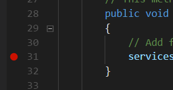
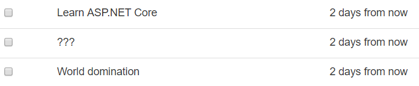
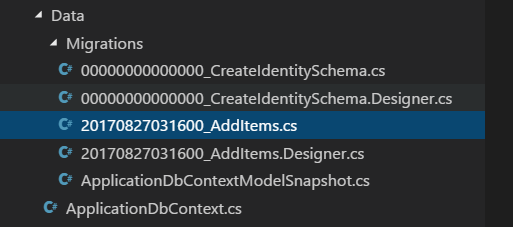

Tú primera aplicación
¿Estas listo para crear tú primera aplicación web con ASP.NET Core? Primero, tendrás que conseguir los programas básicos que necesitas para iniciar es el kit de desarollador de software o SDK de .NET Core y un editor de textos. Aunque con estas herramientas puedes crear aplicaciones completamente funcionales tengo que aclarar que en el mundo real existen programas especializados conocidos como Entornos de Desarollo Integrado o IDE por sus siglas en inglés. Ejemplos de IDEs son Visual Studio de Microsoft o Rider de JetBrains.
El SDK puede ser instalado en Windows, Mac o Linux. Independiente de la plataforma o editor que estas usando, necesitaras instalar el SDK
El SDK de .NET Core: este es un conjunto de programas crear aplicaciones ASP.NET Core, el motor de tiempo de ejecución, las librerías base y la línea de comandos .
Tú editor de código favorito. Puedes usar Atom, Sublime, Notepad o cualquier otro editor de código en el que prefieras escribir código. Si no tienes un editor de código favorito, dale una oportunidad a Visual Studio Code. Es un editor de código gratuito, multiplataforma que tiene gran soporte para escribir código en C#, Javascript, HTML y más.
Si trabajas en Windows, también puedes usar Visual Studio para construir aplicaciones ASP.NET Core. Necesitaras Visual Studio 2019. (La versión gratuita Community está bien). Visual Studio tiene soporte fantástico en el completado del código y refactorización, a pesar Visual Studio Code está muy cercano.
Una vez que haz elegido un editor, necesitaras obtener el SDK.
Instalación de .NET Core SDK
Sólo busca por "Visual Studio Code" sigue las instrucciones para instalarlo.
Instalación de Visual Studio Code
Consigue el SDK
El Kit de Desarrollo de Software para .NET Core o SDK por sus siglas en ingles (Software Development Kit) es un conjunto de programas que permiten desarollar y ejecutar aplicaciones con la plataforma .NET e incluyen compiladores,gestor de paquetes, plantillas de proyectos y más.
Para instalar el SDK de .NET Core necesitas seguir las instrucciones especificas para el sistema operativo que usas por lo que te recomendamos seguir la documentación oficial: Instalación del SDK de .NET Core.
De manera ilustrativa te mostramos el proceso detallado para el sistema operativo Windows
- Descarga el SKD de .NET Core desde la página oficial
- Ejecuta el instalador dotnet-sdk-3.1.102-win-x64
Nota sobre la telemetría El equipo de .NET ha decidido activar la recopilación de datos de uso y problemas con el las herramientas de linea de comandos de .NET Core esto ha causado plemica . Para más detalles ve
Después de que el SDK ha finalizado de instalarse, abre una Terminal (o PowerShell en Windows) y usa la herramienta de linea de comando dotnet (también conocida como CLI) para asegurarte que todo está funcionando:
dotnet --version
3.1.101
Puedes obtener más información acerca de tú plataforma con la opción --info:
dotnet --info
SDK de .NET Core (reflejando cualquier global.json):
Version: 3.1.101
Commit: b377529961
Entorno de tiempo de ejecución:
OS Name: Windows
OS Version: 10.0.18363
OS Platform: Windows
RID: win10-x64
Base Path: C:\Program Files\dotnet\sdk\3.1.101\
Host (useful for support):
Version: 3.1.1
Commit: a1388f194c
.NET Core SDKs installed:
3.1.101 [C:\Program Files\dotnet\sdk]
.NET Core runtimes installed:
Microsoft.AspNetCore.App 3.1.1 [C:\Program Files\dotnet\shared\Microsoft.AspNetCore.App]
Microsoft.NETCore.App 3.1.1 [C:\Program Files\dotnet\shared\Microsoft.NETCore.App]
Microsoft.WindowsDesktop.App 3.1.1 [C:\Program Files\dotnet\shared\Microsoft.WindowsDesktop.App]
To install additional .NET Core runtimes or SDKs:
https://aka.ms/dotnet-download
Si ves una salida similar a la de anterior, estas listo para comenzar.
Hola Mundo en C#
Antes de comenzar con ASP.NET Core, prueba creando y ejecutando una aplicación de consola con C# simple.
Puedes hacer todo esto desde la línea de comandos. Primero, abre una Terminal (o PowerShell en Windows). Navega a la ubicación donde deseas guardar tus proyectos, tal cómo la carpeta de mis Documentos:
cd Documentos
Usa el comando dotnet para crear un nuevo proyecto:
dotnet new console -o HolaMundo
El comando dotnet new sirve para crear un nuevo proyecto de .NET Core. El parámetro console selecciona una plantilla para una aplicación de consola ( un programa que emite texto en la pantalla). El parámetro -o HolaMundo especifica que el comando dotnet new debe crear una carpeta llamada HolaMundo y colocar en ella los archivos del proyecto. Cambiate a esta carpeta asi:
cd HolaMundo
dotnet new console crea un programa de C# básico que escribe el texto ¡Hola Mundo! en la pantalla. El programa esta compuesto por dos archivos: un archivo con extensión .csproj y un archivo con extensión .cs. El primero es conocido como el archivo del proyecto y usa XML para definir algunos metadatos sobre el proyecto como que paquetes requiere, que versión del framework se usa. El segunfo es el código fuente del programa
Después, cuando agregues otros paquetes, estos serán listados aquí (de forma similar a un un archivo package.json para npm). No necesitarás editar esté archivo de forma manual muy seguido.Si abres el primer archivo en un editor de texto, veras esto :
HolaMundo.csproj
<Project Sdk="Microsoft.NET.Sdk">
<PropertyGroup>
<OutputType>Exe</OutputType>
<TargetFramework>netcoreapp3.1</TargetFramework>
</PropertyGroup>
</Project>
El archivo Program.cs incluye el código fuente de programa y usa el lenguaje de programación C#
Program.cs
using System;
namespace HolaMundo
{
class Program
{
static void Main(string[] args)
{
Console.WriteLine("Hola Mundo!");
}
}
}
El método static void Main es el punto de entrada de un programa de C#, y por convención esta colocado dentro de una clase (un tipo de estructura de código o modulo) llamado Program. El enunciado using al inicio importa las clases incluidas en espacio de nombres System desde .NET y las hace disponibles en el código en tú clase.
Dentro de la carpeta del proyecto, usa dotnet run para ejecutar el programa. Veras que la salida se escribe en la consola después que el código compila:
dotnet run
Hello World!
¡Esto es todo lo necesario para crear y ejecutar un programa en .NET! Enseguida, harás lo mismo para una aplicación de ASP.NET Core.
Crear un proyecto de ASP.NET Core
Si todavía estas en el directorio creado para la aplicación Hola Mundo, muévete a tu directorio Documentos o directorio inicial:
cd ..
A continuación, crea un nueva carpeta para almacenar el proyecto completo y navega hacia el.
mkdir AspNetCoreTodo
cd AspNetCoreTodo
A continuación, crea un nuevo proyecto con el comando dotnet new, esta vez utilizaras opciones adicionales:
dotnet new mvc --auth Individual -o AspNetCoreTodo
cd AspNetCoreTodo
Esto crea un nuevo proyecto usando la plantilla mvc y agrega al proyecto código adicional para la autenticación y seguridad (Cubrieré la seguridad en el capítulo Seguridad e identidad).
Te preguntaras porque tener un directorio llamado
AspNetCoreTododentro de otro directorio con el mismo nombre. El directorio principal o directorio raíz puede contener uno o más directorios de proyecto. El directorio raíz es a veces llamado el directorio de la solución. Después, agregaras más directorios de proyecto junto al directorio de proyecto AspNetCoreTodo. Todos en una solo directorio de la solución.
Verás unos pocos archivos en la carpeta del nuevo proyecto, Una vez que abres el nuevo directorio, todo lo que tienes que hacer para ejecutar el proyecto es:
dotnet run
info: Microsoft.Hosting.Lifetime[0]
Now listening on: https://localhost:5001
info: Microsoft.Hosting.Lifetime[0]
Now listening on: http://localhost:5000
info: Microsoft.Hosting.Lifetime[0]
Application started. Press Ctrl+C to shut down.
info: Microsoft.Hosting.Lifetime[0]
Hosting environment: Development
info: Microsoft.Hosting.Lifetime[0]
Content root path: C:\Users\benjaminc\Desktop\AspNetCoreTodo
info: Microsoft.Hosting.Lifetime[0]
Now listening on: http://localhost:5000
Application started. Press Ctrl+C to shut down.
En lugar de imprimir en la consola y salir, este programa inicia un servidor web y espera peticiones en el puerto 5000.
Abre tu navegador web y navega a la dirección http://localhost:5000. Verás la pantalla de inicio predeterterminada de ASP.NET Core, lo cual significa que tu proyecto esta funcionando. Cuando termines presiona Contol-C en la terminal para detener el servidor.
Las partes de un proyecto ASP.NET Core
La plantilla dotnet new mvc genera un gran número de archivos y directorio por ti. Aquí están las cosas más importantes que obtienes fuera de la caja:
-
Los archivos Program.cs y Startup.cs configuraran el servidor web y la canalización de ASP.NET Core. La clase
Startupes donde agregas el middleware que manipula y modifica los solicitudes de entrada y brindar cosas como archivos estáticos o páginas de errores. También en donde agregas tus propios servicios al contenedor de inyección de dependencias (posteriormente habrá más sobre esto). -
Los directorios Models, Views y Controllers contienen los componentes de la arquitectura Modelo Vista Controlador. Explorarás los tres en el siguiente capítulo.
-
El directorio wwwroot contiene assets como archivos estáticos como CSS, Javascript e imágenes. Los archivos en
wwwrootserán despachados como contenido estático y pueden ser empaquetados y minificados automáticamente. -
El archivo appsettings.json contiene los parámetros de configuración que la aplicación ASP.NET Core carga al inicio. Puedes almacenar aquí las cadenas de conexión u otras datos que no quieres que estén predefinidas en el código.
Tips para Visual Studio Code
Si estas usando Visual Studio Code por primera vez, aquí tienes un par de tips de ayuda para iniciar:
-
Abrir el directorio raíz del proyecto: En Visual Studio Code, selecciona Archivo>Abrir carpeta. Si Visual Studio Code te solicita instalar los archivos pendientes, presionar clic en Si para agregarlos.
-
F5 para ejecutar (y puntos de interrupción de depuración): Con tu proyecto abierto, presiona F5 pra ejecutar el proyecto en el modo de depuración. Esto es lo mismo que ejecutar
dotnet runen la linea de comandos, pero tienes el beneficio de configurar puntos de interrupción en tu código dando doble clic en el margen izquierdo:

- Foco para corregir problemas: Si tu código contiene lineas rojos (errores del compilador, coloca el cursor sobre el código que esta en rojo y mirar el icono del foco encendido en el margen izquierdo. el foco te sugerirá reparaciones comunes, como agregar enunciados
usingfaltantes en tu código:

- Compila rápidamente: Usa el atajo
Command-Shift-BoControl-Shift-Bpara ejecutar la tarea de Build run la cual realiza lo mismo quedotnet build.
Estos tips también aplican para Visual Studio 2019 para Windows. Si estas usando Visual Studio, necesitaras abrir el archivo de proyecto directamente. Visual Studio te solicitara guardar el archivo de la solución, el cuál debes guardar en el directorio raíz de la solución (la primera carpeta llamado
AspNetCoreTodo). También puedes crear un proyecto ASP.NET Core directamente o en Visual Studio usando la plantillas disponibles en Archivo>Nuevo Proyecto.
Control de código fuente : GIT
Si usas Git o Github para manejar el control de código fuente, ahora es buen momento para hacer un git init e iniciar el repositorio en el directorio raíz del proyecto:
cd ..
git init
Asegúrate que agregues un archivo .gitignore que ignora las carpeta bin y obj. La plantilla de .gitignore para Visual Studio en el repositorio de Github funciona genial. Desde la versión 3.0 el comando dotnet new incluye una plantilla para crear un archivo gitignore
dotnet new gitignore
Hay mucho más que explorar, así que profundicemos e iniciemos a desarrollar una aplicación.
git commit -m "Versión inicial del proyecto"
Fundamentos de MVC
En este capítulo, explorarás el patrón MVC en ASP.NET Core. MVC (Modelo-Vista-Controlador) es un patrón de diseño ampliamente utilizado para crear aplicaciones web y es usado en casi todos los marcos de desarollo web (ejemplos populares son Ruby on Rails y Expres), adicionalmente marcos de trabajo del lado de cliente con Javascript como Angular. Las aplicaciones móviles sobre iOS y Android también usan una variante de MVC.
Como el nombre sugiere MVC tiene tres componentes: modelos, vistas y controladores. Los Controladores gestionan las solicitudes de entrada desde un cliente o un navegador web y deciden acerca de que código ejecutar. Las Vistas son plantillas (usualmente HTML más un lenguaje de plantillas como Handlebars, Pug o Razor) que contienen datos añadidos a el que luego son mostrados a los usuario. Los Modelos mantienen los datos que son agregado a las vistas, o los datos que son ingresados por los usuarios.
Un patrón común para el código MVC es:
- El controlador recibe una petición y busca alguna información en una base de datos.
- El controlador crea un modelo con la información y la adjunta a la vista.
- La vista es generada y mostrada en el navegador del usuario.
- El usuario presiona un botón o envía un formulario, lo que enviá una nueva solicitud al controlador y el ciclo se repite.
Si has trabajado con MVC en otros lenguajes, te sentirás como en casa en ASP.NET Core MVC. Si eres nuevo en MVC, este capítulo te enseñara lo básico y te ayudará a iniciar.
Lo que vas a programar
El ejercicio de "Hola Mundo" de MVC es construir una aplicación de lista de tareas. Es un proyecto genial ya que es pequeño y simple en alcance, pero trata cada una de las partes de MVC y cubre muchos conceptos que usaras en un aplicación más grande.
En este libro, desarrollaras una aplicación de gestión de tareas pendientes que dejara al usuario agregar elementos a su lista de tareas y una vez que la tarea se ha completado. Más específicamente estarás creando:
- Una aplicación web de servidor (a veces llamada Back-End) usando a ASP.NET Core, C# y el patrón MVC.
- Una base de datos para almacenar la lista de tareas del usuario usando el motor de base de datos SQLite y un sistema llamado Entity Framework Core.
- Las páginas web y la interfaz con la que el usuario interacturá vía el navegador. Usando HTML, CSS y Javascript (llamado el FrontEnd).
- Un formulario de inicio de sesión y verificación de seguridad así cada usuario mantendrá su lista de tareas privada.
¿Suena bien? ¡Vamos a construirla! si no haz creado una aplicación nueva en ASP.NET Core proyecto usando dotnet new mvc, sigue los pasos en el capítulo anterior, debes ser capaz de construir y ejecutar el proyecto y ver la pantalla de bienvenida,
Crear un controlador
Actualmente ya hay algunos controladores en la carpeta Controllers, incluyendo HomeController que generá la pantalla de bienvenida por defautl cuando visitas http://localhost:5000. Puedes ignorar estos controladores por ahora.
Crea un nuevo controlador para la funcionalidad de la lista de tareas y agrega el siguiente código:
Controllers/TodoController.cs
using System;
using System.Collections.Generic;
using System.Linq;
using System.Threading.Tasks;
using Microsoft.AspNetCore.Mvc;
namespace AspNetCoreTodo.Controllers
{
public class TodoController : Controller
{
// Las acciones van aquí
}
}
Las rutas que son manejadas por el controlador son llamadas acciones, y son representadas por métodos en la clase controlador. Por ejemplo, el HomeController incluye tres métodos de acción (Index, About, y Contact) las cuales son mapeadas por ASP.NET Core a estas rutas URLs:
localhost:5000/Home -> Index()
localhost:5000/Home/About -> About()
localhost:5000/Home/Contact -> Contact()
Hay un gran número de convenciones usados por ASP.NET Core, tales como patrón que FooController se convierte en /Foo, y la acción Index puede ser omitida de la URL. Puedes personalizar este comportamiento si así lo deseas, pero por ahora, usaremos las convenciones predefinidas.
Agrega un nueva acción llamada Index al TodoController, remplazando el comentario // Las acciones van aquí;
public class TodoController : Controller
{
public IActionResult Index()
{
// Obtener las tareas desde la base de datos
// Colocar los tareas en un modelo
// Genera la vista usando el modelo
}
}
Los métodos de acción pueden regresar vistas, datos JSON, o códigos de estatus HTTP como 200 OK y 404 Not Found.
El tipo de retorno IActionResult te da la flexibilidad de regresar cualquiera de estos desde una acción. Es una buena práctica mantener los controladores tan ligeros como sea posible. En este caso, el controlador será responsable de obtener la lista de tareas desde la base de datos, poniendo estas tareas en un modelo que la vista pueda entender, y enviara la vista de regreso al navegador del usuario.
Antes de que puedas escribir el resto del código del controlador, necesitas crear un modelo y una vista.
Crear modelos
Hay dos clases modelo diferentes que necesitan ser creadas: un modelo que representa las tareas almacenadas en la base de datos (a veces llamadas entidades) y el modelo que será combinado con la vista (MV en MVC) y sera enviado al navegador del usuario. Debido a que ambos son referidos como modelos, prefiero referirme al último como View Model.
Primero, crea un clase llamada TodoItem en la carpeta Models:
Models/TodoItem.cs
using System;
using System.ComponentModel.DataAnnotations;
namespace AspNetCoreTodo.Models
{
public class TodoItem
{
public Guid Id { get; set; }
public bool IsDone { get; set; }
[Required]
public string Title { get; set; }
public DateTimeOffset? DueAt { get; set; }
}
}
Esta clase define lo que base de datos necesitara para almacenar cada tarea :Un ID, un titulo o nombre, si la tarea esta completada y la fecha de termino. Cada linea define una propiedad de la clase:
-
La propiedad Id es un GUID o un Identificador Global Único. Los Guid son cadenas largas de letras y números como por ejemplo,
43ec09f2-7f70-4f4b-9559-65011d5781bb. Debido a que los GUIDs son aleatorios y extremadamente improbables que sean repitan, son utilizados frecuentemente con identificadores únicos. También puede usar un número (entero) como un identificador pero tienes que configurar tú base de datos para que siempre incremente el número cuando un nuevas filas son añadidas a la base de datos. Los Id son generados de forma aleatoria, así que no tienes que preocuparte de generarlos. -
La propiedad IsDone es un booleano ( valores true/false ), De forma predeterminada, sera falso para todos los nuevos elementos. Después escribirás código para cambiar esta propiedad a true cuando el usuario presiona una casilla de verificación en la vista.
-
La propiedad Title es una cadena (valor texto). Esta mantendrá el nombre o descripción de la tarea pendiente. El atributo
[Required]le dice ASP.NET Core que esta cadena no puede ser nula o vaciá. -
La propiedad DueAt es un
DateTimeOffset, el cual es un tipo de C# que almacena un fecha/hora con la diferencia de horario con el UTC. Guardar la fecha, la hora y la zona horaria juntas hace fácil visualizar las fechas precisamente en sistemas en diferentes zonas horarios.
Nota que el símbolo de interrogación ? después del tipo DateTimeOffset? este marca que la propiedad DueAt es nullable u opcional. Si el ? no se incluye, todos los las tareas pendientes necesitarían una fecha de entrega. Las propiedad ID y IsDone no son marcadas como nullables, asi que ellas son requeridas y siempre tendrá un valor (o valor por omisión).
La cadenas en C# son siempre nullables, así que no es necesario marcar el titulo como nullable: Las cadenas de C# pueden ser nulas, vacíos o contener texto.
Cada propiedad es seguida por get; set;, las cuales es una forma corta de decir que la propiedad es de lectura/escritura (más técnicamente que tiene métodos modificadores.)
En este punto, no importa a cual es la base de datos utilizada. Podría ser SQL Server, MySQL, Mongo Db, Redis o algo más exótico. Este modelo define como lucirá en C# una fila o entrada en la base de datos así no tienes que preocuparte acerca de los detalles sobre la base de datos en el código de tú aplicación. Este simple estilo de modelo es algunas veces llamado a POCO (Plain Old C# Object por sus siglas en ingles).
La vista modelo
Frecuentemente, el modelo que almacenas en la base de datos es similar pero no exactamente el mismo que deseas usar en la MVC (la vista modelo). En este caso, el modelo TodoItem representa a un único elemento de la base de datos. Pero la vista puede necesitar mostrar dos o cientos tareas pendientes (dependiendo que tal malamente el usuario esta procrastinando).
Debido a esto, la vista modelo puede ser una clase separada que mantienen un arreglo de TodoItem
Models/TodoViewModel.cs
namespace AspNetCoreTodo.Models
{
public class TodoViewModel
{
public TodoItem[] Items { get; set; }
}
}
Ahora que tienes algunos modelos, es tiempo de crear una vista que usa un TodoViewModel y generará el HTML correcto para mostrar al usuario su lista de tareas pendientes.
Crear una vista
Las vistas en ASP.NET Core se construyen usando el lenguaje de plantillas Razor, el cual combina HTML y código C#. Si haz escrito páginas usando Handlebars Mustache, ERM en Ruby On Rails o Thymeleaf en Java, ya tienes la idea básica)
La mayoría del código de las vistas es solo HTML, con ocasionales enunciados de C# necesarios para extraer datos del modelo de la vista y convertirlos a texto o a HTML. Los enunciados C# tienen como prefijo el símbolo @
La vista generada por la acción Index del controlador TodoController necesita obtener los datos de la vista modelo, (una colección de tareas pendientes) y mostrarlas en un tabla atractiva para el usuario. Por convención, las vistas van colocadas en la carpeta Views en una subcarpeta correspondiente al nombre del controlador. El nombre del archivo es el nombre de la acción con un una extensión .cshtml.
Crea una carpeta llamada Todo dentro la carpeta Views, y agrega este archivo:
Views/Todo/Index.cshtml
@model TodoViewModel
@{
ViewData["Title"] = "Manage your todo list";
}
<div class="panel panel-default todo-panel">
<div class="panel-heading">@ViewData["Title"]</div>
<table class="table table-hover">
<thead>
<tr>
<td>✔</td>
<td>Item</td>
<td>Due</td>
</tr>
</thead>
@foreach (var item in Model.Items)
{
<tr>
<td>
<input type="checkbox" class="done-checkbox">
</td>
<td>@item.Title</td>
<td>@item.DueAt</td>
</tr>
}
</table>
<div class="panel-footer add-item-form">
<!-- TODO: Add item form -->
</div>
</div>
En la parte superior del archivo, la directiva @model le dice a Razor a qué modelo espera que se vincule esta vista. Se accede al modelo a través de la propiedad Model.
Suponiendo que hay elementos de tareas pendientes en Model.Items, la instrucción foreach se desplazará sobre cada tarea pendiente y mostrará una fila de la tabla (elemento <tr> ) que contiene el nombre y la fecha de vencimiento de la tarea . También se representa una casilla de verificación que permitirá al usuario marcar la tarea como completa.
El archivo de diseño
Quizás se pregunte dónde está el resto del HTML: ¿qué pasa con la etiqueta <body> o el encabezado y pie de página de la página? ASP.NET Core utiliza una vista de diseño que define la estructura base en la que se procesan todas las demás vistas. Esta almacenado en Views/Shared/_Layout.cshtml.
La plantilla predeterminada de ASP.NET Core incluye Bootstarp y JQuery en su archivo de Layout. Puedes crear rápidamente una aplicación web, Por supuesto que puedes usar tus propias librerías CSS y Javascript si asi lo deseas.
Personalizando la hoja de estilos
La plantilla predefinida también incluye un hoja de estilos con algunas reglas CSS básicas. La hoja de estilos es almacenada en el directorio wwwroot/css,Agrega unas cuantas nuevas reglas CSS al final del, archivo site.css:
wwwroot/css/site.css
div.todo-panel {
margin-top: 15px;
}
table tr.done {
text-decoration: line-through;
color: #888;
}
Puedes usar reglas CSS como estas para personalizar como se visualizan y lucen tus páginas.
ASP.NET Core y Razor pueden hacer mucho más, como vistas parciales y componentes de vistas generadas en el servidor , pero un simple Layout y una vista es todo lo que necesitaras por ahora. La documentación oficial de ASP.NET Core(en https://docs.asp.netcontiene muchos ejemplos si deseas aprender más.
Agregar una clase de servicio
Haz creado un modelo, una vista y un controlador. Antes de usar el modelo y la vista en el controlador, también necesitas escribir código que obtendrá la lista de tareas de los usuarios desde la base de datos.
Puedes escribir este código directamente en el controlador, pero es una mejor práctica mantener tu código separado. ¿Por qué? en una aplicación real grande, tendrás que hacer malabares con muchos asuntos:
- Generar la Vista y manipular datos de entrada: esto actualmente es realzado por el controlador.
- Ejecutar las reglas de negocio, o código que esta relacionado con el propósito y negocio de tu aplicación, en una aplicación de lista de tareas, reglas de negocio significa decisiones como configurar la fecha por omisión para la entrega o solo mostrar tareas que están incompletas. Otros ejemplo de lógica de negocio incluyen calcular el costo total con base en el precio, de los productos, razón de impuesto o verificar si algún jugador tiene puntos suficiente para subir de nivel en un juego.
- Obtener y guardar tareas desde la base de datos.
Una vez más es posible hacer todas estas cosas en un solo y enorme controlador, que rápidamente se convertiría en difícil de manejar y probar. En lugar es común ver aplicaciones dividen en dos o tres o más capas y tiers de tal forma que cada una maneja uno (y solo una) aspecto de la aplicación. Esto ayuda a mantener el controlador tan simple como sea posible, y hace más fácil probar y cambiar la lógica de negocio y el código de acceso a base de datos después.
Separado tu aplicación en esta forma es a veces llamada mult-tier o n-tier arquitectura. En algunos casos los tiers o capas son proyectos completamente separados. Pero otras veces i solo se referencia a como las clases son organizadas y utilizadas. Lo más importante es pensar a cerca de como dividir tu aplicación en piezas manejables y evitar tener controladores o clases enormes que intentan hacer todo.
Para este proyecto, usaras dos capa de aplicación: una capa de presentación compuesta de controladores y vistas que interactúan con el usuario, y una capa de servicio que combina las reglas del negocio con el código de accesos a base de datos. La capa de presentación ya existe asi que el siguiente paso es crear un servicio que maneja las reglas de negocio para las tareas y las guarda en una base da datos.
La mayoría de los proyectos grandes usan una arquitectura 3-tier: una capa de presentación, una capa lógica de servicios y una capa de repositorio de datos. Un repositorio es una clase que que solo esta enfocada en código de acceso a base de datos (no lógica de negocios). En esta aplicación, por simplicidad, código combinaras estas en un sola capa de servicio pero siéntete libre de experimentar con diferentes formas de estructurar el código.
Crear una interfaz
El lenguaje de programación C# incluye el concepto de interfaces, donde la definición de los métodos y propiedades de un objeto es separada de la clase que actualmente contiene el código de aquellos métodos y propiedades. Las interfaces hace fácil mantener tus clases desacopladas y fáciles de probar, como veras aquí (y después en el capítulo Pruebas Automáticas) Usaras una interfaces para represente el servicio que puede interactuá con los elementos en la base de datos.
Por convención, el nombre de las interfaces tiene el prefijo "I". Crea un nuevo archivo en el directorio Services:
Services/ITodoItemService.cs
using System;
using System.Collections.Generic;
using System.Threading.Tasks;
using AspNetCoreTodo.Models;
namespace AspNetCoreTodo.Services
{
public interface ITodoItemService
{
Task<TodoItem[]> GetIncompleteItemsAsync();
}
}
Nota que el espacio de nombres de este archivo es AspNetCoreTodo.Services. Los espacios de nombres son una forma de organizar los archivos de código .NET. y se acostumbra nombrar el espacio de nombres siguiendo el directorio en que esta almacenado del archivo (AspNetCoreTodo.Services para archivos en el directorio Services y asi sucesivamente).
Debido a que este archivo (en el espacio de nombres AspNetCoreTodo.Services) hace referencia a la clase TodoItem (en el espacio de nombres AspNetCoreTodo.Models), debe incluir una declaración using en la parte superior del archivo para importar ese espacio de nombres. Sin la instrucción using, verás un error como:
The type or namespace name 'TodoItem' could not be found (are you missing a using directive or an assembly reference?)
Debido a que esta es una interfaces, no hay ningún código aquí, solo la definición (o la firma del método) GetIncompleteItemsAsync. Este método no requiere parámetros y regresa un objeto del tipo Task<TodoItem[]>.
Si la sintaxis parece confusa, recuerda "una Tarea(Task) que contiene un arreglo de TodoItems"
El tipo Task es similar un futuro o promesa, y se usa aquí porque este método sera asíncrono. En otras palabras es posible que el método no pueda ser capaz de regresar la lista de tareas pendientes de forma inmediata porque necesita primero interactuar con la base de datos primero. (Más sobre esto después).
Crear la clase de servicio
Ahora que la interfaz esta definida, estas listo para crear la clase del servicio actual. Cubriré el código de acceso a base de datos a detalle en el capítulo Usar una base de datos, así que por ahora solo usaras datos falsos y siempre regresara 2 tareas definidas de forma estática;
Services/FakeTodoItemService.cs
using System;
using System.Collections.Generic;
using System.Threading.Tasks;
using AspNetCoreTodo.Models;
namespace AspNetCoreTodo.Services
{
public class FakeTodoItemService : ITodoItemService
{
public Task<TodoItem[]> GetIncompleteItemsAsync()
{
var item1 = new TodoItem
{
Title = "Learn ASP.NET Core",
DueAt = DateTimeOffset.Now.AddDays(1)
};
var item2 = new TodoItem
{
Title = "Build awesome apps",
DueAt = DateTimeOffset.Now.AddDays(2)
};
return Task.FromResult(new[] { item1, item2 });
}
}
}
La clase FakeTodoItemService implementa la interfaz ITodoItemService pero siempre regresa el mismo arreglo de dos TodoItem. Usaras esta para poblar el controlador y la vista y después agregaras código de bases de datos real en Usando una base de datos.
Usar inyección de dependencias
Regresa al controlador TodoController, añade algo de código para trabajar con el servicio ITodoItemService:
public class TodoController : Controller
{
private readonly ITodoItemService _todoItemService;
public TodoController(ITodoItemService todoItemService)
{
_todoItemService = todoItemService;
}
public IActionResult Index()
{
// Obtener las tareas desde la base de datos
// Coloca los elemento dentro de un modelo
// Pasa la vista al model y visualiza
}
}
Debido a que ITodoItemService esta el el espacio de nombres "Services", necesitaras agregar la instrucción using al principio del archivo:
using AspNetCoreTodo.Services;
La primera linea de la clase declara un campo privado para tener una referencia al ITodoItemService. Esta variable te deja usar el servicio desde el método de acción Index después (verás como hacerlo en un minuto).
La línea public TodoController(ITodoItemService todoItemService) define un constructor para la clase. El constructor es un método especial que es invocado cada que deseas crear una nueva instancia de la clase (en este caso la clase TodoController). Por haber agregado un parámetro ITodoItemService al constructor, haz declarado que para crear TodoController necesitar proveer un objeto que implementa la interfaz ITodoItemService.
Las interfaces son increíbles ya que ayudan a desacoplar (separar) la lógica de tu aplicación. Debido a que el controlador depende de la interfaz
ITodoItemService, y no de una clase especifica este no conoce o le importa cual clase es actualmente dada. Esto hará realmente fácil probar parte de la aplicación separadamente, Cubriré la pruebas en detalle en el capítulo Pruebas automáticas.
Finalmente ahora puedes usar el ITodoItemService (a través de la variable privada que declaraste) en tu métodos de acción para obtener los elemento desde la capa de servicio:
public IActionResult Index()
{
var items = await _todoItemService.GetIncompleteItemsAsync();
// ...
}
¿ Recuerdas que el método GetIncompleteItemsAsync regresa un Task<TodoItem[]>? Regresar un Task significa que el método no necesariamente tendrá un resultado, pero puedes usar la palabra clave await para asegurarte que tu código espera hasta que el resultado esta listo antes de continuar.
El patrón de Task es común cuando tu código realiza peticiones a la base de datos o una API de servicio, porque no será capaz de regresar un resultado real hasta que la base de datos (o red) responda.Si haz usado promesas o callbacks en Javascript u otro lenguaje, Taskes la misma idea: la promesa que habrá un resultado - en algún tiempo futuro.
Si haz tenido que tratar con el "infierno callback" en el código heredado de Javascript, estas de suerte. Si has tenido que lidiar con el "infierno de devolución de llamada" en un código JavaScript más antiguo, estás de suerte. Tratar con el código asíncrono en .NET es mucho más fácil gracias a la magia de la palabra clave "esperar".
awaitpermite que su código se detenga en una operación asíncrona, y luego retome lo que dejó cuando la base de datos subyacente o la solicitud de red finaliza. Mientras tanto, su aplicación no está bloqueada, ya que puede procesar otras solicitudes según sea necesario. Este patrón es simple pero requiere un poco de tiempo para acostumbrarse, así que no se preocupe si esto no tiene sentido de inmediato. ¡Sigue siguiéndolo!
El único problema es que necesitas actualizar la firma del método Index para devolver un Task<IActionResult>en lugar de IActionResult, y marcarlo como async:
El único no tiene que actualizar la firma del método Index para regresar a Task<IActionResult> en place of sol un IActionResult, y marcarlo con async:
public async Task<IActionResult> Index()
{
var items = await _todoItemService.GetIncompleteItemsAsync();
// Coloca las tareas en un modelo
// Pasa la vista al modelo y la genera
}
Ya casi terminamos. Has hecho que el TodoController dependa de la interfaz ITodoItemService, pero aun no le has dicho a ASP.NET Core que tu deseas el FakeTodoItemService sea el servicio actual que use debajo del capo. Parecerá obvio ahora debido a que solo existe una clase que implementa la interfaz ITodoItemService, pero después tendrás múltiples clases que implementan la misma interfaz, asi que ser explicito es necesario.
Declarando (o conectando) cual clase concreta para usar para cada interfaz se hace en el método ConfigureServices de la clase Startup. Ahora mismo algo como esto:
Startup.cs
public void ConfigureServices(IServiceCollection services)
{
// (... some code)
services.AddMvc();
}
El trabajo del método ConfigureServices es agregar cosas al contenedor de servicios, o a la colección de servicios que ASP.NET Core conocerá. La linea services.AddMvc agregue el servicio que el sistema interno de ASP.NET Core, necesita (como un experimento, intenta comentar esta línea). Cualquier otro servicio que desees usar en tu aplicación debe ser agregado al contenedor de servicios en el método ConfigureServices.
Agrega la siguiente linea en cualquier lugar dentro del método ConfigureServices,
services.AddSingleton<ITodoItemService, FakeTodoItemService>();
Esta linea le especifica a ASP.NET Core que cada que se solicite ITodoItemService en un constructor deberá usar la clase FakeTodoItemService.
AddSingleton agrega un servicio al contenedor de servicios como un singleton. Esto significa que se creará una sola instancia del FakeTodoItemService y se reutilizara dondequiera que el servicio es solicitado. Después, cuando escribas una clase de servicio diferente, una que interactuá con la base de datos usaras una aproximación diferente llamada (scoped), Te explicaré porque en el capítulo Usando una base de datos.
!Esto es todo! Cuando una petición llega y es dirigida al TodoController, ASP.NET Core buscará en los servicios disponibles y automáticamente regresara el FakeTodoItemService cuando el controlador requiere por un ITodoItemService. Debido a que los servicios son "inyectados" desde el contenedor de servicios, este patrón es llamado inyección de dependencias.
Finalizando el controlador
El último paso es finalizar el código del controlador . El controlador ahora tiene un lista de tareas de la capa de servicio, y necesita poner que los items dentro de un TodoViewModel y enlazar este modelo a la vista creada anteriormente:
Controllers/TodoController.cs
public async Task<IActionResult> Index()
{
var items = await _todoItemService.GetIncompleteItemsAsync();
var model = new TodoViewModel()
{
Items = items
};
return View(model);
}
Si no lo haz hecho ya, asegúrate que los siguientes enunciados using estén en la parte superior del archivo:
using AspNetCoreTodo.Services;
using AspNetCoreTodo.Models;
Si estas usando Visual Studio o Visual Studio Code, el editor te sugerirá estos enunciados using cuando colocas el cursor en las lineas rojas.
Probando
Para iniciar la aplicación presiona F5 (si estas usando Visual Studio o Visual Studio Code), o solo teclea dotnet run en la terminal. Si el código compila sin errores, el servidor empezara escuchando en el puerto 5000 de forma predeterminada.
Si tu navegador navegador no se abre de forma automática, ábrelo y navega a la dirección http://localhost:5000/todo. Verás la vista que creaste, con los datos ficticios (por ahora) obtenidos de la base de datos .
A pesar de que es posible navegar directamente hasta http://localhost:5000/todo, será más conveniente agregar una liga llamada My to-dos a la barra de navegación. Para hacer esto, debes editar el archivo de layout.
Actualizar el layout
El archivo de layout en Views/Shared/_Layout.cshtml contiene el código HTML base para cada vista. Este incluye la barra de navegación, la cual es generada en la parte superior de cada página.
Para agregar un nuevo elemento la barra de navegación, encuentra el código HTML para los elementos existentes de la barra de navegación.
Views/Shared/_Layout.cshtml
<ul class="nav navbar-nav">
<li><a asp-area="" asp-controller="Home" asp-action="Index">
Home
</a></li>
<li><a asp-area="" asp-controller="Home" asp-action="About">
About
</a></li>
<li><a asp-area="" asp-controller="Home" asp-action="Contact">
Contact
</a></li>
</ul>
Agrega tu propio elemento que apunta hacia el controlador Todo en lugar de Home:
<li>
<a asp-controller="Todo" asp-action="Index">My to-dos</a>
</li>
Los atributos asp-controller y asp-action del elemento <a> se llaman tag helpers. Antes de generar la vista, ASP.NET Core reemplaza los tag helpers por atributos HTML reales. En este caso, se genera una URL para la ruta /Todo/Index y se agrega al elemento como un atributo href. Esto significa que no tiene que codificar la ruta manualmente al controlador TodoController. En su lugar, ASP.NET Core lo genera automáticamente.
Si haz utilizado Razor en ASP.NET 4.X, notarás algunos cambios de sintaxis. En lugar de usar
@Html.ActionLink()para generar un liga hacia un acción, tag helpers son ahora la forma recomendada de crear link en tus vistas. Tag helpers son útiles para los formularios, también (verás porque un el siguiente capítulo). Puedes aprender más hacer de otros tag helpers en la documentación en https://docs.asp.net.
Agregar paquetes externos con NuGet
Una de las grandes ventajas de usar un ecosistema maduro como .NET Core es que el número de paquetes y librerias de terceros es enorme. Al igual que otros manejadores de paquetes, puedes descargar e instalar paquetes para .NET que te ayudaran con casi cualquier tarea o problema que puedas imaginar.
NuGet esta compuesto por tres componentes el gestor de paquetes, el cliente de NuGet y la galería de NuGet https://www.nuget.org . Puedes buscar paquetes en la web, e instalarlos desde tu máquina local a través de la terminal (o Interfaz gráfica, si estas usando Visual Studio).
Instalar el paquete Humanizer
El final del último capítulo, la aplicación de tareas mostraba las tareas de la siguiente manera:

La columna fecha está mostrando fechas en un formato que es bueno para las máquinas (llamado IS0 8601), pero ambiguo para humanos. ¿No sería mejor si simplemente leemos “X días a partir de hoy”?
Puedes escribir código por ti mismo para convertir una fecha en formato ISO 8601 en una cadena amigable para humanos, pero afortunadamente, hay una manera mucho más rápida.
El paquete Humanizer en NuGet soluciona este problema proporcionado métodos que pueden "humanizar" o reescribir casi cualquier cosa: fechas, horas, duraciones, números y así sucesivamente. Es un proyecto open source fantástico y útil que es publicado bajo la licencia permisiva MIT.
Para agregarlo a tu proyecto, ejecuta este comando en la terminal;
dotnet add package Humanizer
Si das una ojeada en el archivo del proyecto AspNetCoreTodo.csproj veras una nueva línea PackageReference que hace referencia a Humanizer.
Usar Humanizer en la vista
Para usar un paquete en tu código, usualmente tienes que agregar un enunciado using que importa el paquete al principio del archivo
Debido a que Humanizar será usado para reescribir las fechas mostradas en la vista, puedes usarlo directamente en las vistas misma. Primero añade la directiva @using al principio de la vista.
Views/Todo/Index.cshtml
@model TodoViewModel
@using Humanizer
// ...
Después actualiza la línea que escribe la propiedad DueAt para usar el método Humanize del paquete Humanizer:
<td>@item.DueAt.Humanize()</td>
Ahora las fechas son mucho más legibles.

Hay paquetes disponibles en NuGet para todo desde parsear un XML hasta aprendizaje automático para postear en Twitter. ASP.NET Core mismo, bajo el capo, no es más que una colección de paquetes de NuGet que son agregados a tu proyecto.
El archivo de proyecto creado por
dotnet new mvcincluye una sola referencia al paqueteMicrosoft.AspNetCore.Allque es un "metapaquete" conveniente que hace referencia a todos los otros paquetes de ASP.NET Core que necesitas para un proyecto típico. De esta forma no tienes que tener cientos de referencias a paquetes en tu archivo de proyecto.
En el siguiente capítulo, usaras otro conjunto de paquetes de NuGet (un sistema llamado Entity Framework Core) para escribir código que interactúa con una base de datos.
Usar una base de datos
Escribir código de acceso a base de datos puede ser complicado. Es una mala idea pegar consultas de SQL en el código de su aplicación, a menos que realmente sepa lo que está haciendo. Un mapeador de objetos relacional (ORM) facilita la escritura de código que interactúa con una base de datos agregando una capa de abstracción entre su código y la base de datos en sí. Hibernate para Java y ActiveRecord para Ruby son dos ORM bien conocidos.
Existen varios ORM para .NET, incluido uno creado por Microsoft e incluido en ASP.NET Core de forma predeterminada: Entity Framework Core. Entity Framework Core facilita la conexión a varios tipos de bases de datos diferentes y le permite utilizar el código C# para crear consultas de base de datos que se asignan nuevamente a los modelos C# (POCO Plain Old CLR Objects).
¿Recuerda cómo crear una interfaz de servicio desacopla el código del controlador de la clase de servicio real? Entity Framework Core es como una gran interfaz sobre su base de datos. Su código de C# puede permanecer independiente de la base de datos, y puede intercambiar diferentes proveedores dependiendo de la tecnología de base de datos subyacente.
Entity Framework Core puede conectarse a bases de datos relacionales como SQL Server, PostgreSQL y MySQL también funciona con bases de datos NoSQL (documentos) como Mongo. Durante el desarrollo, usarás SQLite en este proyecto para facilitar la configuración
Conectarse a una base de datos
Hay algunas cosas que necesita para usar Entity Framework Core para conectarse a una base de datos. Ya que usó dotnet new y la plantilla MVC + Individual Auth para configurar su proyecto, ya los tiene:
-
Los paquetes de Entity Framework Core. Estos se incluyen de forma predeterminada en todos los proyectos de ASP.NET Core.
-
Una base de datos (naturalmente). El archivo
app.dben el directorio raíz del proyecto es una pequeña base de datos SQLite creada para usted pordotnet new. SQLite es un motor de base de datos ligero que puede ejecutarse sin necesidad de instalar herramientas adicionales en su máquina, por lo que es fácil y rápido de usar en el desarrollo. -
Una clase de contexto de base de datos. El contexto de la base de datos es una clase de C# que proporciona un punto de entrada a la base de datos. Es la forma en que su código interactuará con la base de datos para leer y guardar elementos. Ya existe una clase de contexto básico en el archivo
Data/ApplicationDbContext.cs. -
Una cadena de conexión. Ya sea que se conecte a una base de datos de archivos local (como SQLite) o una base de datos alojada en otro lugar, definirá una cadena que contenga el nombre o la dirección de la base de datos a la que se conectará. Esto ya está configurado para usted en el archivo
appsettings.json: la cadena de conexión para la base de datos SQLite esDataSource = app.db.
Entity Framework Core usa el contexto de la base de datos, junto con la cadena de conexión, para establecer una conexión con la base de datos. Debe indicar a Entity Framework Core qué contexto, cadena de conexión y proveedor de base de datos deben utilizar en el método ConfigureServices de la clase Startup. Esto es lo que está definido para ti, gracias a la plantilla:
services.AddDbContext<ApplicationDbContext>(options =>
options.UseSqlite(
Configuration.GetConnectionString("DefaultConnection")));
Este código agrega el ApplicationDbContext al contenedor de servicio, y le dice a Entity Framework Core que use el proveedor de base de datos SQLite, con la cadena de conexión de la configuración (appsettings.json).
Como puedes ver, dotnet new ¡crea muchas cosas por ti! La base de datos está configurada y lista para ser utilizada. Sin embargo, no tiene tablas para almacenar elementos de tareas pendientes. Para almacenar sus entidades TodoItem, necesitará actualizar el contexto y migrar la base de datos.
Actualizar el contexto
Todavía no hay mucho que hacer en el contexto de la base de datos:
Data/ApplicationDbContext.cs
public class ApplicationDbContext
: IdentityDbContext<ApplicationUser>
{
public ApplicationDbContext(
DbContextOptions<ApplicationDbContext> options)
: base(options)
{
}
protected override void OnModelCreating(ModelBuilder builder)
{
base.OnModelCreating(builder);
// ...
}
}
Agregue una propiedad DbSet al ApplicationDbContext, justo debajo del constructor:
public ApplicationDbContext(
DbContextOptions<ApplicationDbContext> options)
: base(options)
{
}
public DbSet<TodoItem> Items { get; set; }
// ...
Un DbSet representa una tabla o colección en la base de datos. Al crear una propiedad DbSet<TodoItem> llamada Items, le está diciendo a Entity Framework Core que desea almacenar las entidades TodoItem en una tabla llamada Items.
Has actualizado la clase de contexto, pero ahora hay un pequeño problema: el contexto y la base de datos ahora no están sincronizados, porque en realidad no hay una tabla Items en la base de datos. (Solo actualizar el código de la clase de contexto no cambia la base de datos en sí).
Para actualizar la base de datos para reflejar el cambio que acaba de realizar en el contexto, debe crear una migración.
Si ya tiene una base de datos existente, busque en la web "scaffold-dbcontext database" y lea la documentación de Microsoft sobre el uso de la herramienta
Scaffold-DbContextpara realizar una ingeniería inversa de la estructura de la base de datos en elDbContextcorrespondiente y las clases de modelos automáticamente .
Crear una migración
Las migraciones hacen un seguimiento de los cambios en la estructura de la base de datos a lo largo del tiempo. Permiten deshacer (revertir) un conjunto de cambios o crear una segunda base de datos con la misma estructura que la primera. Con las migraciones, tiene un historial completo de modificaciones, como agregar o eliminar columnas (y tablas completas).
En el capítulo anterior, agregaste un conjunto de Tareas al contexto. Dado que el contexto ahora incluye un conjunto (o tabla) que no existe en la base de datos, debe crear una migración para actualizar la base de datos:
dotnet ef migrations add AddItems
Esto crea una nueva migración llamada AddItems al examinar cualquier cambio que hayas realizado en el contexto.
Si recibe un error como
No se ha encontrado el ejecutable que coincida con el comando" dotnet-ef ", asegúrese de estar en el directorio correcto. Estos comandos deben ejecutarse desde el directorio raíz del proyecto (donde se encuentra el archivoProgram.cs).
Si abres el directorio Data/Migrations, verás algunos archivos:

El primer archivo de migración (con un nombre como 00_CreateIdentitySchema.cs) se creó y se aplicó hace mucho cuando ejecutó dotnet new. La nueva migración de AddItem tiene el prefijo de una marca de tiempo cuando la creas.
Puede ver una lista de migraciones con
dotnet ef migrations list.
Si abre su archivo de migración, verá dos métodos llamados Up y Down:
Data/Migrations/
protected override void Up(MigrationBuilder migrationBuilder)
{
// (... some code)
migrationBuilder.CreateTable(
name: "Items",
columns: table => new
{
Id = table.Column<Guid>(nullable: false),
DueAt = table.Column<DateTimeOffset>(nullable: true),
IsDone = table.Column<bool>(nullable: false),
Title = table.Column<string>(nullable: true)
},
constraints: table =>
{
table.PrimaryKey("PK_Items", x => x.Id);
});
// (some code...)
}
protected override void Down(MigrationBuilder migrationBuilder)
{
// (... some code)
migrationBuilder.DropTable(
name: "Items");
// (some code...)
}
El método Up se ejecuta cuando aplica la migración a la base de datos. Dado que agregó un DbSet<TodoItem> al contexto de la base de datos, Entity Framework Core creará una tabla Items (con columnas que coinciden con un TodoItem) cuando aplique la migración.
El método Down hace lo contrario: si necesita deshacer (roll back) la migración, la tabla Elementos se eliminará.
Solución para las limitaciones de SQLite
Existen algunas limitaciones de SQLite que se interponen si intenta ejecutar la migración como está. Hasta que se solucione este problema, use esta solución:
- Comente o elimine las líneas
migrationBuilder.AddForeignKeyen el métodoUp. - Comente o elimine cualquier línea
migrationBuilder.DropForeignKeyen el métodoDown.
Si usa una base de datos SQL completa, como SQL Server o MySQL, esto no será un problema y no tendrá que hacer esta solución (la cual es ciertamente hacker).
Aplicar la migración
El último paso después de crear una (o más) migraciones es aplicarlas realmente a la base de datos:
dotnet ef database update
Este comando hará que Entity Framework Core cree la tabla Items en la base de datos.
Si desea revertir la base de datos, puede proporcionar el nombre de la migración anterior:
dotnet ef database update CreateIdentitySchemaEsto ejecutará los métodosDownde cualquier migración más reciente que la migración que especifique.
Si necesita borrar por completo la base de datos y comenzar de nuevo, ejecute
dotnet ef database databaseseguido dedotnet ef database updatepara volver a armar la base de datos y llevarla a la migración actual.
¡Eso es! Tanto la base de datos como el contexto están listos para funcionar. A continuación, utilizará el contexto en su capa de servicio.
Crear una nueva clase de servicio
Anteriormente en el capítulo de conceptos básicos de MVC, creaste un FakeTodoItemService que contenía elementos de tareas pendientes codificados. Ahora que tiene un contexto de base de datos, puede crear una nueva clase de servicio que usará Entity Framework Core para obtener los tareas reales de la base de datos.
Elimine el archivo FakeTodoItemService.cs y cree un nuevo archivo:
Services/TodoItemService.cs
using System;
using System.Collections.Generic;
using System.Linq;
using System.Threading.Tasks;
using AspNetCoreTodo.Data;
using AspNetCoreTodo.Models;
using Microsoft.EntityFrameworkCore;
namespace AspNetCoreTodo.Services
{
public class TodoItemService : ITodoItemService
{
private readonly ApplicationDbContext _context;
public TodoItemService(ApplicationDbContext context)
{
_context = context;
}
public async Task<TodoItem[]> GetIncompleteItemsAsync()
{
var items = await _context.Items
.Where(x => x.IsDone == false)
.ToArrayAsync();
return items;
}
}
}
Notará el mismo patrón de inyección de dependencia aquí que vio en el capítulo Fundamentos de MVC, excepto que esta vez se está inyectando el ApplicationDbContext. El ApplicationDbContext ya se está agregando al contenedor de servicios en el método ConfigureServices, por lo que está disponible para inyección aquí.
Echemos un vistazo más de cerca al código del método GetIncompleteItemsAsync. Primero, usa la propiedad Items del contexto para acceder a todos los elementos de la tarea en el DbSet:
var items = await _context.Items
Luego, el método Where se usa para filtrar solo las tareas que no están completas:
.Where(x => x.IsDone == false)
El método Where es una característica de C # llamada LINQ (Lenguaje INtegrated Query), que se inspira en la programación funcional y facilita la expresión de consultas de base de datos en código. Bajo el capó, Entity Framework Core traduce el método Where en una declaración como SELECT * FROM Items WHERE IsDone = 0, o un documento de consulta equivalente en una base de datos NoSQL.
Finalmente, el método ToArrayAsync le dice a Entity Framework Core que obtenga todas las entidades que coincidan con el filtro y las devuelva como una matriz. El método ToArrayAsync es asíncrono (devuelve un Task), por lo que debe estar esperando await para obtener su valor.
Para que el método sea un poco más corto, puedes eliminar la variable intermedia items y simplemente devolver el resultado de la consulta directamente (que hace lo mismo):
public async Task<TodoItem[]> GetIncompleteItemsAsync()
{
return await _context.Items
.Where(x => x.IsDone == false)
.ToArrayAsync();
}
Actualizar el contenedor de servicios
Debido a que eliminó la clase FakeTodoItemService, deberá actualizar la línea en ConfigureServices que está cableando la interfaz ITodoItemService:
services.AddScoped<ITodoItemService, TodoItemService>();
AddScoped agrega su servicio al contenedor de servicio utilizando el ciclo de vida de ámbito. Esto significa que se creará una nueva instancia de la clase TodoItemService durante cada solicitud web. Esto es necesario para las clases de servicio que interactúan con una base de datos.
Agregar una clase de servicio que interactúa con Entity Framework Core (y su base de datos) con el ciclo de vida de singleton (u otros ciclos de vida) puede causar problemas, debido a cómo Entity Framework Core administra las conexiones de base de datos por solicitud bajo el capó. Para evitarlo, utilice siempre el ciclo de vida con ámbito para los servicios que interactúan con Entity Framework Core.
¡El TodoController que depende de un ITodoItemService inyectado será maravillosamente inconsciente del cambio en las clases de servicios, pero bajo el capó estará usando Entity Framework Core y¡hablando con una base de datos real!
Pruébalo
Inicie la aplicación y navegue a http://localhost:5000/todo. Los tareas falsos se han ido y su aplicación está realizando consultas reales a la base de datos. No sucede que haya tareas pendientes guardados, por lo que está en blanco por ahora.
En el siguiente capítulo, agregará más funciones a la aplicación, comenzando con la capacidad de crear nuevos tareas pendientes.
Agregar más características
Ahora que te has conectado a la base de datos usando Entity Framework Core, estás listo para agregar más características a la aplicación. Primero, harás posible agregar nuevas tareas usando un formulario.
Agregar nuevas tareas
El usuario agregará nuevas tareas con un simple formulario abajo de la lista

Para agregar esta característica requieres algunos pasos:
- Agregar un formulario a la vista
- Crear una nueva acción en el controlador para manipular el formulario.
- Agregar código a la capa de servicio para actualizar la base de datos.
Agregar un formulario
La vista Views/Todo/Index.cshtml tiene un lugar asignado para el formulario para agregar elementos:
<div class="panel-footer add-item-form">
<!-- TODO: Add item form -->
</div>
Para mantener las cosas separadas y organizadas, crearas un formulario como una vista parcial. Una vista parcial es una pequeña pieza de una vista más grande que vive en un archivo separado.
Crea una vista llamada AddItemPartial.cshtml:
Views/Todo/AddItemPartial.cshtml
@model TodoItem
<form asp-action="AddItem" method="POST">
<label asp-for="Title">Add a new item:</label>
<input asp-for="Title">
<button type="submit">Add</button>
</form>
El tag helper asp-action puede generar una URL para el formulario, de forma similar cuando la usas en un elemento <a>. En este caso, el asp-action es remplazado con una ruta real hacia la acción AddItem que crearas:
<form action="/Todo/AddItem" method="POST">
Agregar un tag-helper asp- al elemento <form> también agrega un campo oculto al formulario que contiene un código de verificación. Este código de verificación puede se usado para prevenir ataques solicitud de sitio cruzada. Verificarás el código cuando escribas la acción.
Esto toma responsabilidad de crear la vista parcial. Ahora, haz una referencia a esta desde la vista principal Todo:
Views/Todo/Index.cshtml
<div class="panel-footer add-item-form">
@await Html.PartialAsync("AddItemPartial", new TodoItem())
</div>
Agregar una acción
Cuando un usuario presiona el botón Add sobre el formulario que creaste, su navegador construirá un solicitud POST hacia /Todo/AddItem en tu aplicación. Que por el momento no funcionara, porque no hay una acción que pueda manejar la ruta /Todo/AddItem. Si intentas ahora, ASP.NET Core regresara un error 404 Not Found
Necesitaras crear una nueva acción llamada AddItem en el TodoController:
[ValidateAntiForgeryToken]
public async Task<IActionResult> AddItem(TodoItem newItem)
{
if (!ModelState.IsValid)
{
return RedirectToAction("Index");
}
var successful = await _todoItemService.AddItemAsync(newItem);
if (!successful)
{
return BadRequest("Could not add item.");
}
return RedirectToAction("Index");
}
¿Notas como la nueva acción AddItem acepta un parámetro TodoItem? Es es el mismo modelo TodoItem que creaste en el capítulo Fundamentos de MVC para guardar la información acerca de la tarea. Cuando es usado aque como un parámetro de acción, ASP.NET Core automáticamente ejecuta un proceso llamado model binding.
Model binding busca en los datos de la solicitud e intente inteligentemente coincidir los datos con las propiedad del modelo. En otras palabras, cuando el usuario envía el formulario y su navegador POST hacia esta acción, ASP.NET Core obtendrá esta información desde el formulario y la colocara en la variable newItem.
El atributo [ValidateAntiForgeryToken] antes de la acción le dice a ASP.NET Core que est debe buscar (y verificar) el código oculto de verificación qu fue agregado al formulario por el tag helper asp-action. Este es una importante medida de seguridad para prevenir falsificación de petición en sitios cruzados. donde tus usuario no puedes ser engañados enviando los datos del formulario a sitios maliciosos. El código de verificación se asegura que la aplicación es actualmente la única que muestra el formulario y recibe los datos del formulario.
Echa un vistazo AddItemPartial.cshtml a la vista una vez más. La linea @model TodoItem al principio del archivo le dice a ASP.NET Core que la vista debe esperar ser pareada con el modelo TodoItem. Esto hace posible usar asp-for="Title" en la etiqueta <input> para dejar ASP.NET Core conozca que esta elemento input es para la propiedad Title.
Porque la línea @model, la vista parcial espeta recibir un objecto TodoItem cuando es generada. Pasando a esta un new TodoItem a través Html.PartialAsync inicializa el formulario con una tarea en blanco.(Intenta añadir { Title = "hello" } y ve que pasa!)
Durante el model binding, cualquier propiedad del model que no pueden se coincidente con los campos en la solicitud. Desde que el formulario solo incluye un elemento input Title, puede espera que las otras propiedades en TodoItem (la bandera IsDone, la fecha de DueAt) serán vacías o contienes valores predefinidos.
En lugar de reutilizar el modelo
TodoItem, otra aproximación seria crear un modelo separado (comoNewTodoItem) que solo es usado para esta acción y solo tiene las propiedades específicas (Titulo) que necesitas para agregar una nueva tarea. Enlazamiento de modelo es aun usar, pero de esta forma haz separado el modelo que es usado para guardar una tarea en la base de datos desde el modelo que es usado para enlazar la solicitud de entrada. Es a veces llamado un binding model or a data transfer object
Después de enlazar los dato de la solicitud al modelo, ASP.NET Core también ejecuta validación del modelo. La validación verifica si los datos en el modelo desde la solicitud de entrada hacen sentidos o es validad. Tu puedes agregar atributos a el modelo para decirle ASP.NET Core como debe ser validado.
El atributo [Required] en el titulo le dice al validador del modelo de ASP.NET Core considera el titulo invalido si no esta o esta en blanco. Dale un vistazo al código de la acción AddItem: el primer bloque checa si el ModelStatees valido.(el resultado de la validación del modelo). Es opcional hacer esta verificación de validación justo en el principio de la acción:
if (!ModelState.IsValid)
{
return RedirectToAction("Index");
}
Si el ModelState es invalido por cualquier razón, el navegador será redireccionado a la ruta /Todo/Index, la cual refresca la página.
Después, el controlador llama a la capa de servicio para realizar la operación de base de datos actual de guardar la nueva tarea:
var successful = await _todoItemService.AddItemAsync(newItem);
if (!successful)
{
return BadRequest(new { error = "Could not add item." });
}
El método AddItemAsync regresa true or false dependiendo el clic, a es item fue agregado satisfactoriamente a la base. Si este falla por alguna razón, la acción regresará un error HTTP 400 Bad Request junto con el objeto que contiene un mensaje de error.
Finalmente, si todo es completado sin errores, la acción redirige el navegador a la ruta /Todo/Index, la cual refresca la página y muestra la nueva, actualizar la listas de tareas de cada usuario.
Agregar un método de servicio
Si estas usando un editor de código que entiende C#, veras unas líneas en rojas bajo AddItemAsync debido a que el método no existe aun.
Como ultimo paso, necesitas agregar un método a la capa de servicio. Primero agregalo a la definición de la interfaz en ITodoItemService:
public interface ITodoItemService
{
Task<TodoItem[]> GetIncompleteItemsAsync();
Task<bool> AddItemAsync(TodoItem newItem);
}
Despues, la implementación actual en TodoItemService:
public async Task<bool> AddItemAsync(TodoItem newItem)
{
newItem.Id = Guid.NewGuid();
newItem.IsDone = false;
newItem.DueAt = DateTimeOffset.Now.AddDays(3);
_context.Items.Add(newItem);
var saveResult = await _context.SaveChangesAsync();
return saveResult == 1;
}
La propiedad newItem.Title ya ha sido configurada por el enlazador de modelos de ASP.NET Core, asi este método solo necesita asignar un Id y confiar el valor por omisión para las otras propiedades. Entonces, la nueva tarea es agregadas al contacto de base de datos. Esta no se guarda hasta que llamas al método SaveChangesAsync(). Si el operación de guardar fue satisfactorio SaveChangesAsync() regresará 1.
Pruebaló
Ejecuta la aplicación y agrega algunas tareas a tu lista mediante el formulario. Debido a que las tareas son almacenadas en la base de datos, estas estarán ahí incluso después de detener e iniciar la aplicación otra vez.
Como un reto extra, intenta agregar un date picker usando HTML y Javascript y deja que el usuario elija una fecha (opcional) para la propiedad
DueAt. Entonces usa, esa fecha en lugar de siempre hacer que una nueva tarea tenga fecha de entrega en 3 días.
Completa los elementos con una casilla de verificación
Agregar tareas a tú lista de tareas es genial, pero eventualmente necesitaras también completar las cosas. En la vista Views/Todo/Index.cshtml, una casilla de verificación es, mostrada para cada tarea:
<input type="checkbox" class="done-checkbox">
Presionando la casilla de verificación no hace nada aun. Al igual que en el capítulo anterior, agregaras este comportamiento usando formularios y acciones. En este caso necesitaras un pequeño código en Javascript.
Agregar elementos al formulario de la vista
Primero, actualiza la vista y encierra cada casilla de verificación con un elemento <form>. Después, agregar un elemento oculto que contenga el ID de la tarea:
Views/Todo/Index.cshtml
<td>
<form asp-action="MarkDone" method="POST">
<input type="checkbox" class="done-checkbox">
<input type="hidden" name="id" value="@item.Id">
</form>
</td>
Cuando el bucle foreach se ejecuta en la vista e imprime una fila para cada tarea pendiente, existirá una copia de este formulario en cada fila. La entrada oculta que contiene el ID de la tarea a realizar permite que el código de su controlador indique qué casilla se marcó. (Sin él, podría indicar que se marcó alguna casilla, pero no cuál.)
Si ejecutas la aplicación ahora mismo, las casillas de verificación aun no hacen nada, porque no hay un botón para submit para decir al navegador para crear una solicitud POST con los datos del formulario. Puedes agregar un botón de submit bajo cada casilla de verificación pero esto seria una mala experiencia de usuario. Idealmente dando clic en una casilla de verificación debería envía el formulario. Puedes lograrlo agregando algo de código de JavaScript.
Agregar código Javascript
Busca el archivo site.js en el directorio wwwroot/js y agrega este código:
wwwroot/js/site.js
$(document).ready(function() {
// Wire up all of the checkboxes to run markCompleted()
$('.done-checkbox').on('click', function(e) {
markCompleted(e.target);
});
});
function markCompleted(checkbox) {
checkbox.disabled = true;
var row = checkbox.closest('tr');
$(row).addClass('done');
var form = checkbox.closest('form');
form.submit();
}
Este código primero usa jQuery (a una librería de apoyo en JavaScript) para adjuntar algo de código al evento click de todos las casillas de verificación sobre la página con la clase CSS done-checkbox. Cuando una casilla de verificación es presionada, la función markCompleted() es ejecutada.
La función markCompleted() hace algunas cosas:
- Agrega el atributo
disableda las casillas de verificación así estas no pueden ser selecionadas otra vez - Agrega la clase CSS
donea la fila padre que contiene la casilla de verificación, la cual cambia la forma que la final luce basada en las reglas CSS en el archivostyle.css - Enviar el formulario
Esto toma responsabilidad del la vista y el código del lado del cliente. Ahora es tiempo de agregar una nueva acción
Agregar una acción al controlador
Como haz probablemente adivinado, necesitas agregar una acción llamada MarkDone en el controlador TodoController:
[ValidateAntiForgeryToken]
public async Task<IActionResult> MarkDone(Guid id)
{
if (id == Guid.Empty)
{
return RedirectToAction("Index");
}
var successful = await _todoItemService.MarkDoneAsync(id);
if (!successful)
{
return BadRequest("Could not mark item as done.");
}
return RedirectToAction("Index");
}
Vayamos a través de cada línea de este método de acción. Primero, el método acepta un parámetro Guid llamado id en la firma del método. A diferencia de la acción AddItem, que utiliza un modelo y un modelo de enlace / validación, el parámetro id es muy simple. Si los datos de la solicitud entrante incluyen un campo llamado id, ASP.NET Core intentará analizarlo como una guía. Esto funciona porque el elemento oculto que agregó al formulario de casilla de verificación se llama id.
Como no está utilizando el enlace de modelo, no hay un ModelState para verificar la validez. En su lugar, puede verificar el valor GUID directamente para asegurarse de que sea válido. Si, por algún motivo, el parámetro id en la solicitud faltaba o no podía analizarse como guid, id tendrá un valor de Guid.Empty. Si ese es el caso, la acción le dice al navegador que redirija a /Todo/Index y actualice la página.
A continuación, el controlador debe llamar a la capa de servicio para actualizar la base de datos. Esto será manejado por un nuevo método llamado MarkDoneAsync en la interfaz ITodoItemService, que devolverá verdadero o falso dependiendo de si la actualización tuvo éxito:
var successful = await _todoItemService.MarkDoneAsync(id);
if (!successful)
{
return BadRequest("Could not mark item as done.");
}
Finalmente, si todo se ve bien, el navegador se redirige a la acción /Todo/Index y la página se actualiza.
Con la vista y el controlador actualizados, todo lo que queda es agregar el método de servicio faltante.
Agregar un método de servicio
Primero, agregar MarkDoneAsync a la definición de la interface:
Services/ITodoItemService.cs
Task<bool> MarkDoneAsync(Guid id);
Después, agrega la implementación concreta al servicio TodoItemService:
Services/TodoItemService.cs
public async Task<bool> MarkDoneAsync(Guid id)
{
var item = await _context.Items
.Where(x => x.Id == id)
.SingleOrDefaultAsync();
if (item == null) return false;
item.IsDone = true;
var saveResult = await _context.SaveChangesAsync();
return saveResult == 1; // One entity should have been updated
}
Este método usa Entity Framework Core y Where() para encontrar una tarea por ID en la base de datos. El método SingleOrDefaultAsync() regresara una tarea o null si esta no es encontrada.
Una vez que estas seguro que el item no es nulo, es una simple cuestión de configurar la propiedad IsDone:
item.IsDone = true;
Cambiando la propiedad solo afecta a la copia local de la tarea hasta que el método SaveChangesAsync() es llamada para guardar el cambio en la base de datos. SaveChangesAsync() regresa un numero que indica cuántas entidades fueron actualizas durante la operación de guardar. En este caso, sera o 1 (la tarea fue actualizada) o (algo malo sucedió).
Probando
Ejecuta la aplicación y checa algunas tareas de la lista. Refrescar la página y ellas desaparecerán completamente, porque el filtro Where() aplicado en el método GetIncompleteItemsAsync().
Ahora mismo, la aplicación contiene una sola, lista de tareas compartida. Seria mucho más util si mantuviera registros de una lista de tareas individual para cada usuario. En el siguiente capítulo, agregarás inicio de sesión y características de seguridad al proyecto.
Seguridad e identidad
La seguridad es una de las principales preocupaciones de cualquier aplicación web moderna o API. Es importante mantener seguros los datos de sus usuarios o usuarios y fuera del alcance de los atacantes. Este es un tema muy amplio, que involucra cosas como:
- Desinfección de entrada de datos para evitar ataques de inyección de SQL.
- Prevención de ataques de falsificación de petición en sitios cruzados(CSRF) en formularios
- Utilizando HTTPS (cifrado de conexión) para que los datos no puedan ser interceptados mientras viaja a través de Internet
- Proporcionar a los usuarios una forma segura de iniciar sesión con una contraseña u otras credenciales
- Diseño de restablecimiento de contraseñas, recuperación de cuentas y flujos de autenticación multifactor
ASP.NET Core puede ayudar a que todo esto sea más fácil de implementar. Los dos primeros (protección contra inyección de SQL y ataques de falsificación de petición en sitios cruzados) ya están incorporados, y puede agregar algunas líneas de código para habilitar el soporte de HTTPS. Este capítulo se centrará principalmente en los aspectos de identidad** de seguridad: manejo de cuentas de usuario, autenticación (inicio de sesión) de sus usuarios de forma segura y toma de decisiones de autorización una vez que se autentiquen.
La autenticación y la autorización son ideas distintas que a menudo se confunden. La autenticación se ocupa de si un usuario está conectado, mientras que la autorización se ocupa de lo que está autorizado a hacer después de que inicie sesión. Se puede pensar en la autenticación como una pregunta: "¿Sé quién? este usuario es? " Mientras que la autorización pregunta: "¿Tiene este usuario permiso para hacer X?"
La plantilla de autenticación individual de MVC + que usó para organizar el proyecto incluye varias clases creadas sobre ASP.NET Core Identity, un sistema de autenticación e identidad que forma parte de ASP.NET Core. Fuera de la caja, esto agrega la capacidad de iniciar sesión con un correo electrónico y una contraseña.
¿Qué es ASP.NET Core Identity?
ASP.NET Core Identity es el sistema de identidad que se incluye con ASP.NET Core. Como todo lo demás en el ecosistema de ASP.NET Core, es un conjunto de paquetes de NuGet que se pueden instalar en cualquier proyecto (y ya están incluidos si usa la plantilla predeterminada).
ASP.NET Core Identity se encarga de almacenar las cuentas de usuario, el hash y el almacenamiento de las contraseñas y la administración de roles para los usuarios. Es compatible con el inicio de sesión de correo electrónico / contraseña, autenticación multifactorial, inicio de sesión social con proveedores como Google y Facebook, así como la conexión a otros servicios mediante protocolos como OAuth 2.0 y OpenID Connect.
Las vistas de registro e inicio de sesión que se suministran con la plantilla de MVC + autenticación individual ya aprovechan la identidad central de ASP.NET, ¡y ya funcionan! Intenta registrarte para obtener una cuenta e iniciar sesión.
Requerir autenticación
A menudo, deseará que el usuario inicie sesión antes de poder acceder a ciertas partes de su aplicación. Por ejemplo, tiene sentido mostrar la página de inicio a todos (ya sea que haya iniciado sesión o no), pero solo mostrar su lista de tareas después de haber iniciado sesión.
Puede usar el atributo [Authorize] en ASP.NET Core para requerir que un usuario que haya iniciado sesión para una acción particular, o un controlador completo. Para requerir autenticación para todas las acciones del TodoController, agregue el atributo encima de la primera línea del controlador:
Controllers/TodoController.cs
[Authorize]
public class TodoController : Controller
{
// ...
}
Agregue esta declaración using en la parte superior del archivo:
using Microsoft.AspNetCore.Authorization;
Intenta ejecutar la aplicación y acceder a /todo sin iniciar sesión. Serás redirigido a la página de inicio de sesión automáticamente.
El atributo
[Authorize]en realidad está haciendo una verificación de autenticación aquí, no una verificación de autorización (a pesar del nombre del atributo). Más adelante, utilizará el atributo para verificar tanto la autenticación como la autorización.
Usando la identidad en la aplicación
Los elementos de la lista de tareas pendientes todavía se comparten entre todos los usuarios, porque las entidades de tareas pendientes almacenadas no están vinculadas a un usuario en particular. Ahora que el atributo [Authorize] asegura que debe iniciar sesión para ver la vista de tareas, puede filtrar la consulta de la base de datos según quién haya iniciado sesión.
Primero, inyecte un UserManager<ApplicationUser> en el TodoController:
Controllers/TodoController.cs
[Authorize]
public class TodoController : Controller
{
private readonly ITodoItemService _todoItemService;
private readonly UserManager<ApplicationUser> _userManager;
public TodoController(ITodoItemService todoItemService,
UserManager<ApplicationUser> userManager)
{
_todoItemService = todoItemService;
_userManager = userManager;
}
// ...
}
Deberá agregar una nueva declaración using en la parte superior:
using Microsoft.AspNetCore.Identity;
La clase UserManager es parte de ASP.NET Core Identity. Puedes usarlo para obtener al usuario actual en la acción Index:
public async Task<IActionResult> Index()
{
var currentUser = await _userManager.GetUserAsync(User);
if (currentUser == null) return Challenge();
var items = await _todoItemService
.GetIncompleteItemsAsync(currentUser);
var model = new TodoViewModel()
{
Items = items
};
return View(model);
}
El nuevo código en la parte superior del método de acción utiliza el UserManager para buscar al usuario actual en la propiedad Usuario disponible en la acción:
var currentUser = await _userManager.GetUserAsync(User);
Si hay un usuario que ha iniciado sesión, la propiedad User contiene un objeto ligero con algo (pero no toda) la información del usuario. El UserManager usa esto para buscar los detalles completos del usuario en la base de datos a través del método GetUserAsync() .
El valor de currentUser nunca debe ser nulo, porque el atributo [Authorize] está presente en el controlador. Sin embargo, es una buena idea hacer un control de cordura, por si acaso. Puede usar el método Challenge() para forzar al usuario a iniciar sesión nuevamente si falta su información:
if (currentUser == null) return Challenge();
Como ahora estás pasando un parámetro ApplicationUser a GetIncompleteItemsAsync(), deberás actualizar la interfaz ITodoItemService:
Services/ITodoItemService.cs
public interface ITodoItemService
{
Task<TodoItem[]> GetIncompleteItemsAsync(
ApplicationUser user);
// ...
}
Ya que cambió la interfaz ITodoItemService, también necesita actualizar la firma del método GetIncompleteItemsAsync() en el TodoItemService:
Services/TodoItemService
public async Task<TodoItem[]> GetIncompleteItemsAsync(
ApplicationUser user)
El siguiente paso es actualizar la consulta de la base de datos y agregar un filtro para mostrar solo los elementos creados por el usuario actual. Antes de que pueda hacer eso, debe agregar una nueva propiedad a la base de datos.
Actualizar la base de datos
Deberá agregar una nueva propiedad al modelo de entidad TodoItem para que cada elemento pueda "recordar" al usuario que lo posee:
Models/TodoItem.cs
public string UserId { get; set; }
Dado que ha actualizado el modelo de entidad utilizado por el contexto de la base de datos, también debe migrar la base de datos. Crea una nueva migración usando dotnet ef en el terminal:
dotnet ef migrations add AddItemUserId
Esto crea una nueva migración llamada AddItemUserId que agregará una nueva columna a la tabla Items, reflejando el cambio realizado en el modelo TodoItem.
Utilice dotnet ef de nuevo para aplicarlo a la base de datos:
dotnet ef database update
Actualizar la clase de servicio
Con la base de datos y el contexto de la base de datos actualizados, ahora puede actualizar el método GetIncompleteItemsAsync() en el TodoItemService y agregar otra cláusula a la declaración Where:
Services/TodoItemService.cs
public async Task<TodoItem[]> GetIncompleteItemsAsync(
ApplicationUser user)
{
return await _context.Items
.Where(x => x.IsDone == false && x.UserId == user.Id)
.ToArrayAsync();
}
Si ejecuta la aplicación y se registra o inicia sesión, verá una lista de tareas vacía una vez más. Desafortunadamente, cualquier tarea que intentes agregar desaparece en el éter, porque aún no has actualizado la acción AddItem para que el usuario la tenga en cuenta.
Actualizar las acciones AddItem y MarkDone
Deberá usar el UserManager para obtener el usuario actual en los métodos de acción AddItem y MarkDone, tal como lo hizo en Index.
Aquí están los dos métodos actualizados:
Controllers/TodoController.cs
[ValidateAntiForgeryToken]
public async Task<IActionResult> AddItem(TodoItem newItem)
{
if (!ModelState.IsValid)
{
return RedirectToAction("Index");
}
var currentUser = await _userManager.GetUserAsync(User);
if (currentUser == null) return Challenge();
var successful = await _todoItemService
.AddItemAsync(newItem, currentUser);
if (!successful)
{
return BadRequest("Could not add item.");
}
return RedirectToAction("Index");
}
[ValidateAntiForgeryToken]
public async Task<IActionResult> MarkDone(Guid id)
{
if (id == Guid.Empty)
{
return RedirectToAction("Index");
}
var currentUser = await _userManager.GetUserAsync(User);
if (currentUser == null) return Challenge();
var successful = await _todoItemService
.MarkDoneAsync(id, currentUser);
if (!successful)
{
return BadRequest("Could not mark item as done.");
}
return RedirectToAction("Index");
}
Ambos métodos de servicio ahora deben aceptar un parámetro ApplicationUser. Actualice la definición de la interfaz en ITodoItemService:
Task<bool> AddItemAsync(TodoItem newItem, ApplicationUser user);
Task<bool> MarkDoneAsync(Guid id, ApplicationUser user);
Y por último, actualice la implementación del método del servicio en TodoItemService. En el método AddItemAsync, establece la propiedad UserId cuando construyas un nuevo TodoItem:
public async Task<bool> AddItemAsync(
TodoItem newItem, ApplicationUser user)
{
newItem.Id = Guid.NewGuid();
newItem.IsDone = false;
newItem.DueAt = DateTimeOffset.Now.AddDays(3);
newItem.UserId = user.Id;
// ...
}
La cláusula Where en el método MarkDoneAsync también debe verificar la ID del usuario, por lo que un usuario deshonesto no puede completar las tareas de otra persona adivinando sus ID:
public async Task<bool> MarkDoneAsync(
Guid id, ApplicationUser user)
{
var item = await _context.Items
.Where(x => x.Id == id && x.UserId == user.Id)
.SingleOrDefaultAsync();
// ...
}
¡Todo listo! Intenta usar la aplicación con dos cuentas de usuario diferentes. Las tareas pendientes se mantienen privadas para cada cuenta.
Autorización con roles
Los roles son un enfoque común para el manejo de permisos y autorizaciones en una aplicación web. Por ejemplo, es común crear una rol de administrador que otorgue a los usuarios administradores más permisos o poder que los usuarios normales.
En este proyecto, agregará una página para Administrar usuarios que solo los administradores pueden ver. Si los usuarios normales intentan acceder a él, verán un error.
Agregar una página Administrar usuarios
Primero, crea un nuevo controlador:
Controllers/ManageUsersController.cs
using System;
using System.Linq;
using System.Threading.Tasks;
using Microsoft.AspNetCore.Mvc;
using Microsoft.AspNetCore.Authorization;
using Microsoft.AspNetCore.Identity;
using AspNetCoreTodo.Models;
using Microsoft.EntityFrameworkCore;
namespace AspNetCoreTodo.Controllers
{
[Authorize(Roles = "Administrator")]
public class ManageUsersController : Controller
{
private readonly UserManager<ApplicationUser>
_userManager;
public ManageUsersController(
UserManager<ApplicationUser> userManager)
{
_userManager = userManager;
}
public async Task<IActionResult> Index()
{
var admins = (await _userManager
.GetUsersInRoleAsync("Administrator"))
.ToArray();
var everyone = await _userManager.Users
.ToArrayAsync();
var model = new ManageUsersViewModel
{
Administrators = admins,
Everyone = everyone
};
return View(model);
}
}
}
La configuración de la propiedad Roles en el atributo [Authorize]garantizará que el usuario tenga que iniciar sesión y se le asigne el rol de Administrador para poder ver la página.
A continuación, crea un modelo para la vista:
Models/ManageUsersViewModel.cs
using System.Collections.Generic;
namespace AspNetCoreTodo.Models
{
public class ManageUsersViewModel
{
public ApplicationUser[] Administrators { get; set; }
public ApplicationUser[] Everyone { get; set;}
}
}
Finalmente, cree una carpeta Views/ManageUsers y una vista para la acción Index:
Views/ManageUsers/Index.cshtml
@model ManageUsersViewModel
@{
ViewData["Title"] = "Manage users";
}
<h2>@ViewData["Title"]</h2>
<h3>Administrators</h3>
<table class="table">
<thead>
<tr>
<td>Id</td>
<td>Email</td>
</tr>
</thead>
@foreach (var user in Model.Administrators)
{
<tr>
<td>@user.Id</td>
<td>@user.Email</td>
</tr>
}
</table>
<h3>Everyone</h3>
<table class="table">
<thead>
<tr>
<td>Id</td>
<td>Email</td>
</tr>
</thead>
@foreach (var user in Model.Everyone)
{
<tr>
<td>@user.Id</td>
<td>@user.Email</td>
</tr>
}
</table>
Inicie la aplicación e intente acceder a la ruta /ManageUsers mientras esté conectado como un usuario normal. Verás esta página de acceso denegado:

Eso es porque a los usuarios no se les asigna automáticamente el rol de Administrador.
Crear una cuenta de administrador de prueba
Por razones obvias de seguridad, no es posible que nadie registre una nueva cuenta de administrador. De hecho, el rol de administrador ni siquiera existe en la base de datos todavía.
Puede agregar el rol de administrador más una cuenta de administrador de prueba a la base de datos la primera vez que se inicie la aplicación. Agregar datos por primera vez a la base de datos se llama inicializar o sembrar la base de datos.
Crea una nueva clase en la raíz del proyecto llamada SeedData:
SeedData.cs
using System;
using System.Linq;
using System.Threading.Tasks;
using AspNetCoreTodo.Models;
using Microsoft.AspNetCore.Identity;
using Microsoft.EntityFrameworkCore;
using Microsoft.Extensions.DependencyInjection;
namespace AspNetCoreTodo
{
public static class SeedData
{
public static async Task InitializeAsync(
IServiceProvider services)
{
var roleManager = services
.GetRequiredService<RoleManager<IdentityRole>>();
await EnsureRolesAsync(roleManager);
var userManager = services
.GetRequiredService<UserManager<ApplicationUser>>();
await EnsureTestAdminAsync(userManager);
}
}
}
El método InitializeAsync() utiliza un IServiceProvider (la colección de servicios que se configura en el método Startup.ConfigureServices()) para obtener el RoleManager y el UserManager de ASP.NET Core Identity.
Agregue dos métodos más debajo del método InitializeAsync(). Primero, el método VerifyRolesAsync():
private static async Task EnsureRolesAsync(
RoleManager<IdentityRole> roleManager)
{
var alreadyExists = await roleManager
.RoleExistsAsync(Constants.AdministratorRole);
if (alreadyExists) return;
await roleManager.CreateAsync(
new IdentityRole(Constants.AdministratorRole));
}
Este método verifica si existe un rol de Administrador en la base de datos. Si no, crea uno. En lugar de escribir repetidamente la cadena "Administrador", cree una pequeña clase llamada Constants para mantener el valor:
Constants.cs
namespace AspNetCoreTodo
{
public static class Constants
{
public const string AdministratorRole = "Administrator";
}
}
Si lo desea, puede actualizar el
ManageUsersControllerpara usar este valor constante también.
A continuación, escriba el método EnsureTestAdminAsync():
SeedData.cs
private static async Task EnsureTestAdminAsync(
UserManager<ApplicationUser> userManager)
{
var testAdmin = await userManager.Users
.Where(x => x.UserName == "admin@todo.local")
.SingleOrDefaultAsync();
if (testAdmin != null) return;
testAdmin = new ApplicationUser
{
UserName = "admin@todo.local",
Email = "admin@todo.local"
};
await userManager.CreateAsync(
testAdmin, "NotSecure123!!");
await userManager.AddToRoleAsync(
testAdmin, Constants.AdministratorRole);
}
Si no hay un usuario con el nombre de usuario admin@todo.local en la base de datos, este método creará uno y le asignará una contraseña temporal. Después de iniciar sesión por primera vez, ¡debe cambiar la contraseña de la cuenta a algo seguro!
A continuación, debe indicar a su aplicación que ejecute esta lógica cuando se inicie. Modifique Program.cs y actualice Main()para llamar a un nuevo método, InitializeDatabase():
Program.cs
public static void Main(string[] args)
{
var host = BuildWebHost(args);
InitializeDatabase(host);
host.Run();
}
Luego, agregue el nuevo método a la clase debajo de Main():
private static void InitializeDatabase(IWebHost host)
{
using (var scope = host.Services.CreateScope())
{
var services = scope.ServiceProvider;
try
{
SeedData.InitializeAsync(services).Wait();
}
catch (Exception ex)
{
var logger = services
.GetRequiredService<ILogger<Program>>();
logger.LogError(ex, "Error occurred seeding the DB.");
}
}
}
Agregue esta declaración using al principio del archivo:
using Microsoft.Extensions.DependencyInjection;
Este método obtiene la colección de servicios que necesita SeedData.InitializeAsync() y luego ejecuta el método para inicializar la base de datos. Si algo sale mal, se registra un error.
Como
InitializeAsync()devuelve unTask, el métodoWait()debe usarse para asegurarse de que finaliza antes de que la aplicación se inicie. Normalmente utilizarías "esperar" para esto, pero por razones técnicas no puedes usar "esperar" en la clase "Programa". Esta es una rara excepción. ¡Debes usarawaiten cualquier otro lugar!
Cuando inicie la aplicación a continuación, la cuenta admin@todo.local se creará y se le asignará el rol de Administrador. Intente iniciar sesión con esta cuenta y navegue a http://localhost:5000/ManageUsers. Verás una lista de todos los usuarios registrados para la aplicación.
Como desafío adicional, intente agregar más funciones de administración a esta página. Por ejemplo, podría agregar un botón que le dé a un administrador la posibilidad de eliminar una cuenta de usuario.
Verificar la autorización en una vista
El atributo [Authorize] facilita la verificación de autorización en un controlador o método de acción, pero ¿qué sucede si necesita verificar la autorización en una vista? Por ejemplo, sería bueno mostrar un enlace "Administrar usuarios" en la barra de navegación si el usuario que ha iniciado sesión es un administrador.
Puede inyectar el UserManager directamente en una vista para realizar estos tipos de comprobaciones de autorización. Para mantener sus vistas limpias y organizadas, cree una nueva vista parcial que agregará un elemento a la barra de navegación en el diseño:
Views/Shared/_AdminActionsPartial.cshtml
@using Microsoft.AspNetCore.Identity
@using AspNetCoreTodo.Models
@inject SignInManager<ApplicationUser> signInManager
@inject UserManager<ApplicationUser> userManager
@if (signInManager.IsSignedIn(User))
{
var currentUser = await userManager.GetUserAsync(User);
var isAdmin = currentUser != null
&& await userManager.IsInRoleAsync(
currentUser,
Constants.AdministratorRole);
if (isAdmin)
{
<ul class="nav navbar-nav navbar-right">
<li>
<a asp-controller="ManageUsers"
asp-action="Index">
Manage Users
</a>
</li>
</ul>
}
}
Es una convención nombrar vistas parciales compartidas que comienzan con un guión bajo
_, pero no es obligatorio.
Esta vista parcial primero utiliza el SignInManager para determinar rápidamente si el usuario está conectado. Si no lo está, el resto del código de vista se puede omitir. Si hay hay un usuario conectado, el UserManager se utiliza para buscar sus detalles y realizar una verificación de autorización con IsInRoleAsync(). Si todas las comprobaciones son correctas y el usuario es un administrador, se agrega un enlace Administrar usuarios a la barra de navegación.
Para incluir este parcial en el diseño principal, edite _Layout.cshtml y agréguelo a la sección de la barra de navegación:
Views/Shared/_Layout.cshtml
<div class="navbar-collapse collapse">
<ul class="nav navbar-nav">
<!-- existing code here -->
</ul>
@await Html.PartialAsync("_LoginPartial")
@await Html.PartialAsync("_AdminActionsPartial")
</div>
Cuando inicie sesión con una cuenta de administrador, ahora verá un nuevo elemento en la parte superior derecha:
Más recursos
ASP.NET Core Identity le ayuda a agregar las características de seguridad e identidad como inicio de sesión y registro a su aplicación. Las plantillas dotnet new le brindan vistas y controladores predefinidos que manejan estos escenarios comunes para que pueda comenzar a trabajar rápidamente.
Hay mucho más que puede hacer ASP.NET Core Identity, como restablecer la contraseña y el inicio de sesión social. La documentación disponible en http://docs.asp.net es un recurso fantástico para aprender a agregar estas funciones.
Alternativas a la identidad central de ASP.NET
ASP.NET Core Identity no es la única forma de agregar funcionalidad de identidad. Otro enfoque es utilizar un servicio de identidad alojado en la nube como Azure Active Directory B2C u Okta para manejar la identidad de su aplicación. Puedes pensar en estas opciones como parte de una progresión:
- Seguridad haz la tu mismo: no se recomienda, a menos que sea un experto en seguridad.
- ASP.NET Core Identity: Con las plantillas se obtiene una gran cantidad de código de forma inmediata, lo que hace que sea bastante fácil comenzar. Aún así deberá escribir algo de código para escenarios más avanzados y mantener una base de datos para almacenar información del usuario.
- Servicios de identidad alojados en la nube. El servicio maneja escenarios simples y avanzados (autenticación multifactor, recuperación de cuenta, federación) y reduce significativamente la cantidad de código que necesita escribir y mantener en su aplicación. Además, los datos confidenciales del usuario no se almacenan en su propia base de datos.
Para este proyecto, ASP.NET Core Identity es una excelente opción. Para proyectos más complejos, recomiendo investigar un poco y experimentar con ambas opciones para comprender cuál es la mejor para su caso de uso.
Pruebas automatizadas
Escribir pruebas es una parte importante del desarrollo de cualquier aplicación. Probar su código lo ayuda a encontrar y evitar errores, y posteriormente facilita la refactorización de su código sin descomponer la funcionalidad o introducir nuevos problemas.
En este capítulo, aprenderá cómo escribir dos tipos de pruebas: pruebas de unitarias y pruebas de integración que utilizan su aplicación de ASP.NET Core. Las pruebas unitarias son pruebas pequeñas que prueban que un solo método o parte de la lógica funcione correctamente. Las pruebas de integración (a veces llamadas pruebas funcionales) son pruebas más grandes que simulan escenarios reales y prueban múltiples capas o partes de su aplicación.
Pruebas unitarias
Las pruebas unitarias son pruebas pequeñas y cortas que verifican el comportamiento de un solo método o clase. Cuando el código que está probando se basa en otros métodos o clases, las pruebas unitarias se basan en simulardores de esas otras clases para que la prueba solo se enfoque en una cosa a la vez.
Por ejemplo, la clase TodoController tiene dos dependencias: un ITodoItemService y el UserManager. El TodoItemService, a su vez, depende del ApplicationDbContext. (La idea de que puede dibujar una línea desde TodoController>TodoItemService>ApplicationDbContext se llama gráfico de dependencia).
Cuando la aplicación se ejecuta normalmente, el sistema de inyección de dependencias y el contenedor de servicios de ASP.NET Core inyecta cada uno de esos objetos en el gráfico de dependencia cuando se crea el TodoController o el TodoItemService.
Cuando escribe una prueba de unitaria, por otro lado, tiene que manejar usted mismo el gráfico de dependencia. Es típico proporcionar versiones solo de prueba o "simuladas" de esas dependencias. Esto significa que puede aislar solo la lógica en la clase o el método que está probando. (¡Esto es importante! Si está probando un servicio, no quiere también estar escribiendo accidentalmente en su base de datos).
Crear un proyecto de prueba
Es una buena práctica crear un proyecto separado para sus pruebas, para que se mantengan separados del código de su aplicación. El nuevo proyecto de prueba debe vivir en un directorio que esté al lado (no dentro) del directorio de su proyecto principal.
Si actualmente se encuentra en el directorio de su proyecto, cd sube un nivel. (Este directorio raíz también se llamará AspNetCoreTodo). Luego use este comando para crear un nuevo proyecto de prueba:
dotnet new xunit -o AspNetCoreTodo.UnitTests
xUnit.NET es un marco de prueba popular para el código .NET que se puede usar para escribir pruebas de unitarias y de integración. Como todo lo demás, es un conjunto de paquetes NuGet que se pueden instalar en cualquier proyecto. La plantilla dotnet new xunit ya incluye todo lo que necesitas.
Su estructura de directorio ahora debería verse así:
AspNetCoreTodo/
AspNetCoreTodo/
AspNetCoreTodo.csproj
Controllers/
(etc...)
AspNetCoreTodo.UnitTests/
AspNetCoreTodo.UnitTests.csproj
Como el proyecto de prueba utilizará las clases definidas en su proyecto principal, deberá agregar una referencia al proyecto AspNetCoreTodo:
dotnet agregar referencia ../AspNetCoreTodo/AspNetCoreTodo.csproj
Elimine el archivo UnitTest1.cs que se crea automáticamente. Estás listo para escribir tu primera prueba.
Si está utilizando Visual Studio Code, es posible que deba cerrar y volver a abrir la ventana de Visual Studio Code para la compleción del código funcione en el nuevo proyecto.
Escribe una prueba de servicio
Eche un vistazo a la lógica en el método AddItemAsync() del TodoItemService:
public async Task<bool> AddItemAsync(
TodoItem newItem, ApplicationUser user)
{
newItem.Id = Guid.NewGuid();
newItem.IsDone = false;
newItem.DueAt = DateTimeOffset.Now.AddDays(3);
newItem.UserId = user.Id;
_context.Items.Add(newItem);
var saveResult = await _context.SaveChangesAsync();
return saveResult == 1;
}
Este método toma una serie de decisiones o suposiciones sobre el nuevo elemento (en otras palabras, realiza la lógica de negocios en el nuevo elemento) antes de que realmente lo guarde en la base de datos:
- La propiedad
UserIddebe establecerse a la ID del usuario - Los nuevos elementos siempre deben estar incompletos (
IsDone = false) - El título del nuevo elemento debe copiarse de
newItem.Title - Las nuevos tareas siempre deben vencer dentro de 3 días
Imagínese si usted o alguien más reformuló el método AddItemAsync() y se olvidó de parte de esta lógica de negocios. ¡El comportamiento de su aplicación podría cambiar sin que usted se dé cuenta! Puede evitar esto escribiendo una prueba que verifique que esta lógica de negocios no haya cambiado (incluso si la implementación interna del método cambia).
Puede parecer poco probable ahora que pueda introducir un cambio en la lógica empresarial sin darse cuenta, pero es mucho más difícil hacer un seguimiento de las decisiones y suposiciones en un proyecto grande y complejo. Cuanto más grande sea su proyecto, más importante es tener controles automáticos que aseguren que nada haya cambiado.
Para escribir una prueba unitaria que verifique la lógica en TodoItemService, cree una nueva clase en su proyecto de prueba:
AspNetCoreTodo.UnitTests/TodoItemServiceShould.cs
using System;
using System.Threading.Tasks;
using AspNetCoreTodo.Data;
using AspNetCoreTodo.Models;
using AspNetCoreTodo.Services;
using Microsoft.EntityFrameworkCore;
using Xunit;
namespace AspNetCoreTodo.UnitTests
{
public class TodoItemServiceShould
{
[Fact]
public async Task AddNewItemAsIncompleteWithDueDate()
{
// ...
}
}
}
Hay muchas maneras diferentes de nombrar y organizar pruebas, todas con diferentes pros y contras. Me gusta después de fijar mis clases de prueba con
Deberíapara crear una oración legible con el nombre del método de prueba, ¡pero puede usar su propio estilo!
El atributo [Fact] proviene del paquete xUnit.NET, y marca este método como un método de prueba.
El TodoItemService requiere un ApplicationDbContext, que normalmente está conectado a su base de datos. No querrás usar eso para las pruebas. En su lugar, puede usar el proveedor de base de datos en memoria de Entity Framework Core en su código de prueba. Como toda la base de datos existe en la memoria, se borra cada vez que se reinicia la prueba. Y, dado que es un proveedor adecuado de Entity Framework Core, ¡TodoItemService no notará la diferencia!
Use un DbContextOptionsBuilder para configurar el proveedor de la base de datos en memoria, y luego haga una llamada a AddItemAsync () :
var options = new DbContextOptionsBuilder<ApplicationDbContext>()
.UseInMemoryDatabase(databaseName: "Test_AddNewItem").Options;
// Set up a context (connection to the "DB") for writing
using (var context = new ApplicationDbContext(options))
{
var service = new TodoItemService(context);
var fakeUser = new ApplicationUser
{
Id = "fake-000",
UserName = "fake@example.com"
};
await service.AddItemAsync(new TodoItem
{
Title = "Testing?"
}, fakeUser);
}
La última línea crea un tarea llamado "¿Pruebas?", Y le dice al servicio que lo guarde en la base de datos (en memoria).
Para verificar que la lógica de negocio funcionó correctamente, escriba un código más debajo del bloque using existente:
// Use a separate context to read data back from the "DB"
using (var context = new ApplicationDbContext(options))
{
var itemsInDatabase = await context
.Items.CountAsync();
Assert.Equal(1, itemsInDatabase);
var item = await context.Items.FirstAsync();
Assert.Equal("Testing?", item.Title);
Assert.Equal(false, item.IsDone);
// Item should be due 3 days from now (give or take a second)
var difference = DateTimeOffset.Now.AddDays(3) - item.DueAt;
Assert.True(difference < TimeSpan.FromSeconds(1));
}
La primera afirmación es una comprobación de validez: nunca debe haber más de un elemento guardado en la base de datos en memoria. Suponiendo que eso sea cierto, la prueba recupera el elemento guardado con FirstAsync y luego afirma que las propiedades están establecidas en los valores esperados.
Tanto las pruebas de unitarias como las de integración generalmente siguen el patrón AAA (Arrange-Act-Assert): los objetos y los datos se configuran primero, luego se realiza alguna acción y, finalmente, la prueba verifica (Assert) que ocurrió el comportamiento esperado.
Confirmar un valor de fecha y hora es un poco complicado, ya que la comparación de dos fechas para la igualdad fallará incluso si los componentes de milisegundos son diferentes. En su lugar, la prueba verifica que el valor DueAt esté a menos de un segundo del valor esperado.
Ejecutar la prueba
En la terminal, ejecute este comando (asegúrese de que todavía esté en el directorio AspNetCoreTodo.UnitTests):
dotnet test
El comando test escanea el proyecto actual en busca de pruebas (en este caso marcadas con los atributos [Fact]), y ejecuta todas las pruebas que encuentra. Verás una salida similar a:
Starting test execution, please wait...
Discovering: AspNetCoreTodo.UnitTests
Discovered: AspNetCoreTodo.UnitTests
Starting: AspNetCoreTodo.UnitTests
Finished: AspNetCoreTodo.UnitTests
Total tests: 1. Passed: 1. Failed: 0. Skipped: 0.
Test Run Successful.
Test execution time: 1.9074 Seconds
Ahora tiene una prueba que proporciona cobertura de prueba del TodoItemService. Como desafío adicional, intente escribir pruebas unitarias que aseguren:
- El método
MarkDoneAsync()devuelve falso si se pasa un ID que no existe - El método
MarkDoneAsync()devuelve true cuando se marca una tarea como completa. - El método
GetIncompleteItemsAsync()devuelve solo las tareas que pertenecen a un usuario en particular
Pruebas de integración
En comparación con las pruebas unitarias, las pruebas de integración tienen un alcance mucho mayor. Prueba toda la pila de aplicaciones. En lugar de aislar una clase o método, las pruebas de integración aseguran que todos los componentes de su aplicación estén funcionando juntos correctamente: enrutamiento, controladores, servicios, código de base de datos, etc.
Las pruebas de integración son más lentas y más complejas que las pruebas de unitarias, por lo que es común que un proyecto tenga muchas pruebas de unitarias pequeñas pero solo un puñado de pruebas de integración.
Para probar toda la pila (incluido el enrutamiento del controlador), las pruebas de integración normalmente hacen llamadas HTTP a su aplicación como lo haría un navegador web.
Para realizar una prueba de integración, puede iniciar su aplicación y realizar solicitudes manualmente a http://localhost:5000. Sin embargo, ASP.NET Core ofrece una mejor alternativa: la clase TestServer. Esta clase puede alojar su aplicación durante la duración de la prueba, y luego detenerla automáticamente cuando se completa la prueba.
Crear un proyecto de prueba
Si actualmente se encuentra en el directorio de su proyecto, cd sube un nivel al directorio raíz AspNetCoreTodo. Use este comando para crear un nuevo proyecto de prueba:
dotnet new xunit -o AspNetCoreTodo.IntegrationTests
Su estructura de directorio ahora debería verse así:
AspNetCoreTodo/
AspNetCoreTodo/
AspNetCoreTodo.csproj
Controllers/
(etc...)
AspNetCoreTodo.UnitTests/
AspNetCoreTodo.UnitTests.csproj
AspNetCoreTodo.IntegrationTests/
AspNetCoreTodo.IntegrationTests.csproj
Si lo prefiere, puede mantener sus pruebas unitarias y pruebas de integración en el mismo proyecto. Para proyectos grandes, es común dividirlos para que sea fácil ejecutarlos por separado.
Dado que el proyecto de prueba utilizará las clases definidas en su proyecto principal, deberá agregar una referencia al proyecto principal:
dotnet add reference ../AspNetCoreTodo/AspNetCoreTodo.csproj
También deberá agregar el paquete NuGet Microsoft.AspNetCore.TestHost:
dotnet add package Microsoft.AspNetCore.TestHost
Elimine el archivo UnitTest1.cs creado por dotnet new. Estás listo para escribir una prueba de integración.
Escribir una prueba de integración.
Hay algunas cosas que deben configurarse en el servidor de prueba antes de cada prueba. En lugar de abarrotar la prueba con este código de configuración, puede mantener esta configuración en una clase separada. Crea una nueva clase llamada TestFixture:
AspNetCoreTodo.IntegrationTests/TestFixture.cs
using System;
using System.Collections.Generic;
using System.IO;
using System.Net.Http;
using Microsoft.AspNetCore.Hosting;
using Microsoft.AspNetCore.TestHost;
using Microsoft.Extensions.Configuration;
namespace AspNetCoreTodo.IntegrationTests
{
public class TestFixture : IDisposable
{
private readonly TestServer _server;
public HttpClient Client { get; }
public TestFixture()
{
var builder = new WebHostBuilder()
.UseStartup<AspNetCoreTodo.Startup>()
.ConfigureAppConfiguration((context, config) =>
{
config.SetBasePath(Path.Combine(
Directory.GetCurrentDirectory(),
"..\\..\\..\\..\\AspNetCoreTodo"));
config.AddJsonFile("appsettings.json");
});
_server = new TestServer(builder);
Client = _server.CreateClient();
Client.BaseAddress = new Uri("http://localhost:8888");
}
public void Dispose()
{
Client.Dispose();
_server.Dispose();
}
}
}
Esta clase se encarga de configurar un TestServer, y ayudará a mantener las pruebas limpias y ordenadas.
Ahora estás (realmente) listo para escribir una prueba de integración. Crea una nueva clase llamada TodoRouteShould:
AspNetCoreTodo.IntegrationTests/TodoRouteShould.cs
using System.Net;
using System.Net.Http;
using System.Threading.Tasks;
using Xunit;
namespace AspNetCoreTodo.IntegrationTests
{
public class TodoRouteShould : IClassFixture<TestFixture>
{
private readonly HttpClient _client;
public TodoRouteShould(TestFixture fixture)
{
_client = fixture.Client;
}
[Fact]
public async Task ChallengeAnonymousUser()
{
// Arrange
var request = new HttpRequestMessage(
HttpMethod.Get, "/todo");
// Act: request the /todo route
var response = await _client.SendAsync(request);
// Assert: the user is sent to the login page
Assert.Equal(
HttpStatusCode.Redirect,
response.StatusCode);
Assert.Equal(
"http://localhost:8888/Account" +
"/Login?ReturnUrl=%2Ftodo",
response.Headers.Location.ToString());
}
}
}
Esta prueba realiza una solicitud anónima (sin iniciar sesión) a la ruta /todo y verifica que el navegador se redirige a la página de inicio de sesión.
Este escenario es un buen candidato para una prueba de integración, ya que involucra múltiples componentes de la aplicación: el sistema de enrutamiento, el controlador, el hecho de que el controlador está marcado con [Authorize], y así sucesivamente. También es una buena prueba porque garantiza que nunca quitará accidentalmente el atributo [Authorize] y hará que la vista de tareas sea accesible para todos.
Ejecutar la prueba
Ejecute la prueba en el terminal con dotnet test. Si todo funciona bien, verás un mensaje de éxito:
Starting test execution, please wait...
Discovering: AspNetCoreTodo.IntegrationTests
Discovered: AspNetCoreTodo.IntegrationTests
Starting: AspNetCoreTodo.IntegrationTests
Finished: AspNetCoreTodo.IntegrationTests
Total tests: 1. Passed: 1. Failed: 0. Skipped: 0.
Test Run Successful.
Test execution time: 2.0588 Seconds
Resumiendo
Las pruebas son un tema amplio y hay mucho más que aprender. Este capítulo no toca el código de prueba de interfaz de usuario (UI) ni el código de prueba (JavaScript), que probablemente merecen libros completos por su cuenta. Sin embargo, debe tener las habilidades y el conocimiento básico que necesita para aprender más sobre las pruebas y practicar la escritura de pruebas para sus propias aplicaciones.
La documentación de ASP.NET Core (https://docs.asp.net) y Stack Overflow son excelentes recursos para aprender más y encontrar respuestas cuando te quedas atascado.
Desplegar la aplicación
Has recorrido un largo camino, pero aún no has terminado. Una vez que has creado una gran aplicación, ¡debes compartirla con el mundo!
Debido a que las aplicaciones ASP.NET Core pueden ejecutarse en Windows, Mac o Linux, existen varias formas diferentes de implementar su aplicación. En este capítulo, te mostraré las formas más comunes (y más fáciles) de estar en línea.
Opciones de implementación
Las aplicaciones de ASP.NET Core se implementan normalmente en uno de estos entornos:
-
Un host Docker. Cualquier máquina capaz de albergar contenedores Docker puede usarse para alojar una aplicación ASP.NET Core. Crear una imagen de Docker es una forma muy rápida de implementar su aplicación, especialmente si está familiarizado con Docker. (Si no lo esta, ¡no te preocupes! Cubriré los pasos más adelante).
-
Azure. Microsoft Azure tiene soporte nativo para las aplicaciones de ASP.NET Core. Si tiene una suscripción a Azure, solo necesita crear una aplicación web y cargar los archivos de su proyecto. Cubriré cómo hacer esto con el CLI de Azure en la siguiente sección.
-
Linux (con Nginx). Si no implementar en Docker, aún puede alojar su aplicación en cualquier servidor Linux (esto incluye las máquinas virtuales Amazon EC2 y DigitalOcean). Es típico emparejar ASP.NET Core con el proxy inverso Nginx. (Más sobre Nginx a continuación.)
-
Windows. Puede usar el servidor web IIS en Windows para alojar aplicaciones ASP.NET Core. Por lo general, es más fácil (y más barato) implementarlo en Azure, pero si prefiere administrar los servidores de Windows usted mismo, funcionará bien.
Kestrel y proxies inversos
Si no le importan los detalles de como hospedar aplicaciones ASP.NET Core y solo desea las instrucciones paso a paso, siéntase libre de saltar a una de las siguientes dos secciones.
ASP.NET Core incluye un servidor web rápido y ligero llamado Kestrel. Es el servidor que ha estado usando cada vez que ejecuta dotnet run y navega a http://localhost:5000. Cuando implementas tu aplicación en un entorno de producción, aún utilizará Kestrel detrás de escena. Sin embargo, se recomienda que coloque un proxy inverso delante de Kestrel, porque Kestrel aún no tiene balance de carga y otras características que tienen los servidores web más maduros.
En Linux (y en los contenedores Docker), puede usar Nginx o el servidor web Apache para recibir solicitudes entrantes de Internet y enrutarlas a su aplicación alojada con Kestrel. Si estás en Windows, IIS hace lo mismo.
Si está utilizando Azure para alojar su aplicación, todo esto se hace automáticamente. Cubriré la configuración de Nginx como un proxy inverso en la sección de Docker.
Desplegar en Azure
La implementación de la aplicación de ASP.NET Core en Azure solo lleva unos pocos pasos. Puede hacerlo a través del portal web de Azure o en la línea de comandos utilizando la CLI de Azure. Voy a cubrir este último.
Lo que necesitarás
- Git (usa
git --versionpara asegurarte de que esté instalado) - El CLI de Azure (siga las instrucciones de instalación en https://github.com/Azure/azure-cli)
- Una suscripción de Azure (con la suscripción gratuita es suficiente)
- Un archivo de configuración de implementación en la raíz de su proyecto.
Crear un archivo de configuración de implementación
Como hay múltiples proyectos en la estructura de su directorio (la aplicación web y dos proyectos de prueba), Azure no sabrá cuál publicar. Para solucionar este problema, cree un archivo llamado .deployment en la parte superior de la estructura de su directorio:
.deployment
[config]
project = AspNetCoreTodo/AspNetCoreTodo.csproj
Asegúrese de guardar el archivo como .deployment sin otras partes en el nombre. (En Windows, puede que tenga que poner comillas alrededor del nombre del archivo, como ".deployment", para evitar que se agregue una extensión .txt.)
Si ejecuta el comando ls o dir en su directorio principal del proyecto, debería ver estos elementos:
.deployment
AspNetCoreTodo
AspNetCoreTodo.IntegrationTests
AspNetCoreTodo.UnitTests
Configurar los recursos de Azure
Si acaba de instalar la CLI de Azure por primera vez, ejecute
az login
y siga las instrucciones para iniciar sesión en su máquina. Luego, crea un nuevo grupo de recursos para esta aplicación:
az group create -l westus -n AspNetCoreTodoGroup
Esto crea un grupo de recursos en la región oeste de los Estados Unidos. Si está ubicado lejos del oeste de los Estados Unidos, use az account list-locations para obtener una lista de ubicaciones y encontrar una más cercana a usted.
A continuación, cree un plan de Servicio de aplicaciones en el grupo que acaba de crear:
az appservice plan create -g AspNetCoreTodoGroup -n AspNetCoreTodoPlan --sku F1
F1 es el plan de aplicación gratuita. Si desea usar un nombre de dominio personalizado con su aplicación, use el plan D1 ($ 10/mes) o superior.
Ahora cree una aplicación web en el plan del servicio de aplicaciones:
az webapp create -g AspNetCoreTodoGroup -p AspNetCoreTodoPlan -n MyTodoApp
El nombre de la aplicación (MyTodoApp arriba) debe ser globalmente único en Azure. Una vez que se crea la aplicación, tendrá una URL predeterminada en el formato: http://mytodoapp.azurewebsites.net
Implementa tus archivos de proyecto en Azure
Puede usar Git para enviar sus archivos de aplicación a la aplicación web de Azure. Si su directorio local no ha sido inicializado como un repositorio de Git, ejecute estos comandos para configurarlo:
git init
git add .
git commit -m "Versión"
A continuación, cree un nombre de usuario y contraseña de Azure para la implementación:
az webapp deployment user set --user-name nate
Siga las instrucciones para crear una contraseña. Luego usa config-local-git para generar una URL de Git:
az webapp deployment source config-local-git -g AspNetCoreTodoGroup -n MyTodoApp --out tsv
https://nate@mytodoapp.scm.azurewebsites.net/MyTodoApp.git
Copie la URL en el portapapeles y utilícela para agregar un control remoto Git a su repositorio local:
git remoto add azure <paste>
Solo necesitas hacer estos pasos una vez. Ahora, cuando quiera enviar sus archivos de aplicaciones a Azure, verifíquelos con Git y ejecute
git push azure master
Ver una secuencia de mensajes de registro a medida que la aplicación se implementa en Azure.
Cuando esté completo, vaya a http://yourappname.azurewebsites.net para ver la aplicación.
Desplegando con Docker
Si no está utilizando una plataforma como Azure, las tecnologías de contenedores como Docker pueden facilitar la implementación de aplicaciones web en sus propios servidores. En lugar de dedicar tiempo a configurar un servidor con las dependencias que necesita para ejecutar su aplicación, copiar archivos y reiniciar procesos, simplemente puede crear una imagen de Docker que describa todo lo que su aplicación necesita para ejecutar y distribuirla como un contenedor en cualquier host Docker.
Docker también puede hacer que escalar su aplicación en múltiples servidores sea más fácil. Una vez que tenga una imagen, usarla para crear 1 contenedor es el mismo proceso que crear 100 contenedores.
Antes de comenzar, necesita tener instalada la CLI de Docker en su máquina de desarrollo. Busque "instalar docker para (mac/windows/linux)" y siga las instrucciones en el sitio web oficial de Docker. Puedes verificar que está instalado correctamente con
docker version
Añadir un archivo Dockerfile
Lo primero que necesitará es un Dockerfile, que es como una receta que le dice a Docker lo que su aplicación necesita para compilar y ejecutar.
Cree un archivo llamado Dockerfile (sin extensión) en la carpeta raíz, nivel superior de AspNetCoreTodo. Ábrelo en tu editor favorito. Escribe la siguiente línea:
FROM microsoft/dotnet:2.0-sdk AS build
Esto le dice a Docker que use la imagen microsoft/dotnet:2.0-sdk como punto de partida. Esta imagen es publicada por Microsoft y contiene las herramientas y dependencias que necesita para ejecutar dotnet build y compilar su aplicación. Al utilizar esta imagen preconstruida como punto de partida, Docker puede optimizar la imagen producida para su aplicación y mantenerla pequeña.
A continuación, agregue esta línea:
COPY AspNetCoreTodo/*.csproj ./app/AspNetCoreTodo/
El comando COPY copia el archivo de proyecto .csproj en la imagen en la ruta /app/AspNetCoreTodo/. Tenga en cuenta que todavía no se ha copiado en la imagen ninguno del código real (archivos .cs). Verás por qué en un minuto.
WORKDIR /app/AspNetCoreTodo
RUN dotnet restore
WORKDIR es el equivalente de Docker de cd. Esto significa que cualquier comando ejecutado a continuación se ejecutará desde el directorio /app/AspNetCoreTodo que el comando COPY creó en el último paso.
Ejecutar el comando dotnet restore restaura los paquetes NuGet que necesita la aplicación, definidos en el archivo .csproj. Al restaurar los paquetes dentro de la imagen antes agregando el resto del código, Docker puede almacenar en caché los paquetes restaurados. Luego, si realiza cambios de código (pero no cambia los paquetes definidos en el archivo de proyecto), la reconstrucción de la imagen de Docker será súper rápida.
Ahora es el momento de copiar el resto del código y compilar la aplicación:
COPY AspNetCoreTodo/. ./AspNetCoreTodo/
RUN dotnet publish -o out /p:PublishWithAspNetCoreTargetManifest="false"
El comando dotnet publish compila el proyecto, y el indicador -o out coloca los archivos compilados en un directorio llamado out.
Estos archivos compilados se utilizarán para ejecutar la aplicación con los últimos comandos:
FROM microsoft/dotnet:2.0-runtime AS runtime
ENV ASPNETCORE_URLS http://+:80
WORKDIR /app
COPY --from=build /app/AspNetCoreTodo/out ./
ENTRYPOINT ["dotnet", "AspNetCoreTodo.dll"]
El comando FROM se usa nuevamente para seleccionar una imagen más pequeña que solo tiene las dependencias necesarias para ejecutar la aplicación. El comando ENV se usa para establecer variables de entorno en el contenedor, y la variable de entorno ASPNETCORE_URLS le dice a ASP.NET Core a qué interfaz de red y puerto debe enlazarse (en este caso, el puerto 80).
El comando ENTRYPOINT permite a Docker saber que el contenedor debe iniciarse como un ejecutable ejecutando dotnet AspNetCoreTodo.dll. Esto le dice a dotnet que inicie su aplicación desde el archivo compilado creado por dotnet publish anteriormente. (Cuando haces dotnet run durante el desarrollo, estás logrando lo mismo en un solo paso).
El Dockerfile completo se ve así:
Dockerfile
FROM microsoft/dotnet:2.0-sdk AS build
COPY AspNetCoreTodo/*.csproj ./app/AspNetCoreTodo/
WORKDIR /app/AspNetCoreTodo
RUN dotnet restore
COPY AspNetCoreTodo/. ./
RUN dotnet publish -o out /p:PublishWithAspNetCoreTargetManifest="false"
FROM microsoft/dotnet:2.0-runtime AS runtime
ENV ASPNETCORE_URLS http://+:80
WORKDIR /app
COPY --from=build /app/AspNetCoreTodo/out ./
ENTRYPOINT ["dotnet", "AspNetCoreTodo.dll"]
Crear una imagen
Asegúrese de que Dockerfile esté guardado y luego use docker build para crear una imagen:
docker build -t aspnetcoretodo .
¡No te olvides el punto al final! Eso le dice a Docker que busque un archivo Dockerfile en el directorio actual.
Una vez creada la imagen, puede ejecutar docker images para listar todas las imágenes disponibles en su máquina local. Para probarlo en un contenedor, ejecute
docker run --name aspnetcoretodo_sample --rm -it -p 8080:80 aspnetcoretodo
El indicador -it le dice a Docker que ejecute el contenedor en modo interactivo (dando salida al terminal, en lugar de ejecutarse en segundo plano). Cuando quieras detener el contenedor, presiona Control-C.
¿Recuerda la variable ASPNETCORE_URLS que le dijo a ASP.NET Core que escuche en el puerto 80? La opción -p 8080: 80 le dice a Docker que asigne el puerto 8080 en su máquina al puerto 80 del contenedor. Abra su navegador y navegue a http://localhost:8080 para ver la aplicación que se ¡ejecuta en el contenedor!
Configurar Nginx
Al principio de este capítulo, mencioné que debería usar un proxy inverso como Nginx para enviar las solicitudes a Kestrel. También puedes usar Docker para esto.
La arquitectura general constará de dos contenedores: un contenedor Nginx que escucha en el puerto 80 y reenvía las solicitudes al contenedor que acaba de construir y aloja su aplicación con Kestrel.
El contenedor Nginx necesita su propio archivo Docker. Para evitar que entre en conflicto con el Dockerfile que acaba de crear, cree un nuevo directorio en la raíz de la aplicación web:
mkdir nginx
Crea un nuevo archivo Dockerfile y agrega estas líneas
nginx/Dockerfile
FROM nginx
COPY nginx.conf /etc/nginx/nginx.conf
Next, create an nginx.conf file:
nginx/nginx.conf
events { worker_connections 1024; }
http {
server {
listen 80;
location / {
proxy_pass http://kestrel:80;
proxy_http_version 1.1;
proxy_set_header Upgrade $http_upgrade;
proxy_set_header Connection 'keep-alive';
proxy_set_header Host $host;
proxy_cache_bypass $http_upgrade;
}
}
}
Este archivo de configuración le dice a Nginx que haga proxy de las solicitudes entrantes a http://kestrel:80. (Verás por qué kestrel funciona como nombre de host en un momento).
Cuando implementa su aplicación en un entorno de producción, debe agregar la directiva
server_namey validar y restringir el encabezado del host a valores buenos conocidos. Para más información, ver:
https://github.com/aspnet/Announcements/issues/295
Set up Docker Compose
Aquí hay un archivo más para crear. Arriba en el directorio raíz, crea docker-compose.yml:
docker-compose.yml
nginx:
build: ./nginx
links:
- kestrel:kestrel
ports:
- "80:80"
kestrel:
build: .
ports:
- "80"
Docker Compose es una herramienta que te ayuda a crear y ejecutar aplicaciones de múltiples contenedores. Este archivo de configuración define dos contenedores: nginx de la receta ./Nginx/Dockerfile, y kestrel de la receta ./Dockerfile. Los contenedores están explícitamente vinculados entre sí para que puedan comunicarse.
Puede intentar girar toda la aplicación multi-contenedor ejecutando:
docker-compose up
Intente abrir un navegador y navegue a http://localhost (puerto 80, no 8080). Nginx escucha en el puerto 80 (el puerto HTTP predeterminado) y envía solicitudes a su aplicación ASP.NET Core alojada por Kestrel.
Configurar un servidor Docker
Las instrucciones de configuración específicas están fuera del alcance de este libro, pero se puede usar cualquier versión moderna de Linux (como Ubuntu) para configurar un host Docker. Por ejemplo, podría crear una máquina virtual con Amazon EC2 e instalar el servicio Docker. Puede buscar (por ejemplo) "configurar docker amazon ec2" para obtener instrucciones.
Me gusta usar DigitalOcean porque han hecho que sea muy fácil comenzar. DigitalOcean tiene una máquina virtual Docker pre-construida y tutoriales detallados para que Docker esté en funcionamiento (busque "docker digitalocean").
Conclusión
Gracias por llegar hasta el final de El pequeño libro de ASP.NET Core!. Si este fue útil (o no) me encantaría escuchar tus comentarios. Enviame tus comentarios vía Twitter:https://twitter.com/jbenjamincc
¿Cómo aprender más?
Hay muchos más que ASP.NET Core puede hacer que no pude incluir en este corto libro, incluyendo
- Construir APIs RESTful y microservicios
- Usar ASP.NET Core con aplicaciones de una sola páginas SPA con Angular o React
- Páginas Razor
- Construir y minificar recursos estáticos
- WebSockets y SignalR
Hay un numero de formas en las que puedes aprender más:
-
La documentación de ASP.NET Core La documentación oficial de ASP.NET Core en http://docs.asp.net contiene un numero de tutoriales a detalle cubriendo muchos temas. La recomiendo ampliamente.
-
ASP.NET Core in Action. Este libro por Andrew Lock es un zambullida profunda y completa en ASP.NET Core. Puedes comprarlo en Amazon o en un librería.
-
Cursos de LinkedIn Learning y Pluralsight. Si aprendes mejor en video, hay cursos fantásticos disponibles en Pluralsight y LinkedIn Learning ( incluyendo algunos míos). Si no tienes una cuenta disponible y necesitas un cupón, enviame un correo electrónico a nate@barbettini.com.
-
Blog de Nate. También escribo acerca de ASP.NET Core y más en mi blog en https://www.recaffeinate.co.
Happy coding!
Acerca del autor
Hey, Soy Nate! escribí El pequeño libro en un largo y lleno de cafeína fin de semana porque amo a la comunidad de .NET Y desea regresar un poc de alguna forma. Espero te haya ayudada a prender algo nuevo.
Puedes esta en contacto conmigo en Twitter (@nbarbettini) o en mi blog (https://www.recaffeinate.co). También puedes contactarme vía correo electrónico en nate@barbettini.com.
Agradecimiento especiales
Para Jennifer, quien siempre apoya mis locas ideas.
A los siguientes contribuidores quienes mejoraron El pequeño libro de ASP.NET Core:
- 0xNF
- Matt Welke [welkie]
- Raman Zhylich [zhilich]
A estos increíbles programadores políglotas quines tradujeron el pequeño libro de ASP.NET Core:
- sahinyanlik (Turco)
- windsing, yuyi (Chino simplificado)
Registro de cambios
El registro completo y detallado esta siempre disponible aquí:
https://github.com/nbarbettini/little-aspnetcore-book/releases
1.1.1 (2018-06-11): Corrección de errores tipográficos encontrados por los lectores.
1.1.0 (2018-05-03): Se reelaboró significativamente el capítulo Agregar más características para usar MVC en toda la pila y eliminar el patrón AJAX. Se eliminó el inicio de sesión de Facebook para simplificar el capítulo de seguridad y agilizar las pruebas y la implementación. Se actualizaron las instrucciones de Docker para reflejar las últimas prácticas recomendadas. Se corrigieron errores tipográficos y se agregaron sugerencias de los lectores. ¡El libro también luce un nuevo diseño mejorado de portada!
1.0.4 (2018-01-15): Se agregó una explicación de los ciclos de vida del contenedor de servicios, se aclararon los puertos del servidor y el indicador -o, y se eliminaron los puntos y coma después de las directivas Razor. Crédito de autor corregido de la traducción china. Corrección de otros errores tipográficos y fallas encontrados por los lectores.
1.0.3 (2017-11-13): Corrección de errores tipográficos y pequeñas mejoras sugeridas por los lectores.
1.0.2 (2017-10-20): Corrección de errores y pequeñas mejoras. Se agrega la liga a las traducciones.
1.0.1 (2017-09-23): Corrección de errores y pequeñas mejoras.
1.0.0 (2017-09-18): Liberación inicial.